第 64 章把“设计控制器”改写成了“解一个优化问题”：指标写成积分，解 Riccati 方程，得到一个唯一的 K。那套推导有一个前提一直没有被追问——对象是确定的。A 和 B 就是那两个矩阵，一个数字都不差。可真实设备上从来没有这种事：磁悬浮的电流刚度随气隙变，倒立摆的摆长你量不准，飞机的短周期模态随高度和速度漂。参数一变，第 64 章算出来的那个“最优” K 就不再最优，有时候连稳都保不住。
于是问题变成这样：模型里有一个只知道区间的参数，要设计一个控制器，使它对区间里的每一个取值都稳、都满足某项性能。 这句话里藏着“无穷多条要求”，而设计要求通常是等式和不等式，无穷多条不等式没法一条一条验。1990 年代之后，控制界对这类问题给出了一个统一的答法：把它们写成线性矩阵不等式（Linear Matrix Inequality，LMI），然后交给凸优化求解器。这套答法之所以能站住，靠的是两件事——一是矩阵不等式在变量做某种替换后会变成凸的，二是凸问题的可行性可以在有限步内判定。
本章仍然只用一个算例，二阶不稳定对象：
\dot{x}_1=x_2,\qquad \dot{x}_2=a\,x_1+u,\qquad a\in[1,\,3] \tag{65-1}
x_1 是位置（m），x_2 是速度（m/s），u 是加速度指令（m/s^2），a 是一个正的、不知道具体值只知道落在 [1,3] 里的刚度系数。a>0 意味着“位置偏出去会产生同向的加速度”，也就是负刚度，所以开环本身就不稳。这个模型不是一个凑出来的数学玩具：磁悬浮在平衡点附近线性化就是这个形状，a 正比于电流刚度除以质量；倒立摆在线性化后也是这个形状，a=g/\ell，摆长 \ell 从 0.33 m 变到 1 m 就对应 a 从 3 变到 1；飞机的短周期近似、火箭的姿态通道，也都能化到这个形式上。它的好处是把“参数不确定”这件事压缩成了一个标量，所有推导都能手算核对，而结论又能直接搬到高维。
a 的标称值取 2，不确定性 \pm1，相对误差 \pm50\%。这个幅度在工程上不算夸张：气隙变一半、摆长估错一倍，都是会发生的。所有数字由 code/ch065_sim.py 现算，全部 LMI 用 cvxpy 建模、CLARABEL 求解，图由 code/ch065_figs.py 重画。
先把“不稳”这件事量化。式 (65-1) 的状态矩阵是
A(a)=\begin{bmatrix}0&1\\ a&0\end{bmatrix},\qquad \det(\lambda I-A)=\lambda^2-a \tag{65-2}
开环极点是 \pm\sqrt{a}。三个代表性取值下：
| a | 开环极点 | 不稳定极点的时间常数 | 相对标称的偏移 |
|---|---|---|---|
| 1.0 | \pm1.0000 | 1.000 s | -50\% |
| 2.0 | \pm1.4142 | 0.707 s | 0 |
| 3.0 | \pm1.7321 | 0.577 s | +50\% |
表 65-1 开环极点随不确定参数的变化
这张表要读出三件事。第一，三个取值全都不稳，不只是“可能不稳”——最乐观的 a=1 也有一个 +1 的极点。所以本章没有“标称情况下先稳、参数漂了再说”这种缓冲，任何一个设计都必须把不稳定极点拽回左半平面。第二，参数变化对极点的绝对影响不大（1 到 1.732，差 0.73），但相对影响很大（50%）。第三，右极点随 a 增大而右移，左极点也随之左移，两个极点被“撑开”：a=1 时是 \pm1，a=3 时是 \pm1.732，系统的“不稳定程度”和“响应速度”是同一个参数在推。
现在按第 64 章的办法，在三个点上各自做 LQR（Q=I、R=1），得到三套增益：
| a | K_1 | K_2 | 闭环极点 | 最弱阻尼比 |
|---|---|---|---|---|
| 1.0 | 2.4142 | 2.4142 | -1.0000,\ -1.4142 | 1.000 |
| 2.0 | 4.2361 | 3.0777 | -1.1756,\ -1.9021 | 1.000 |
| 3.0 | 6.1623 | 3.6503 | -1.4142,\ -2.2361 | 1.000 |
表 65-2 三个参数点各自最优的 LQR 增益
三行都是“该点上最好”的解，代价函数在各自点上都取到最小。但请注意 K_1 这一列：2.4142 → 4.2361 → 6.1623，从最左到最右涨了 2.55 倍。这不是数值噪声，是物理必然：a 越大，负刚度越强，位置反馈必须越硬才能把它按住。三个 K 是三个完全不同的控制器，彼此不能替代。
“不能替代”到什么程度？拿标称点 a=2 的 K=[4.2361,\,3.0777] 去控 a=3 的机器，闭环极点是 -0.475 和 -2.603，看着还稳；但阶跃响应峰值冲到 76.0%，调节时间 8.00 s，稳态误差 0.7597——一个“稳但不准、还剧烈振荡”的回路。反过来，拿它去控 a=1 的机器，极点 -1.539\pm0.932j、阻尼比 0.855，响应很漂亮，可稳态误差 0.3090，也就是指令走 1 m，实际只走到 0.691 m。稳态误差的来源是前馈系数按 a=2 算的，被控对象的直流增益变了，前馈就不再匹配（§65.4 会把这笔账算清）。
这两个失败方式值得分开记：参数往大漂，问题是振荡和饱和；参数往小漂，问题是静差。 它们对应两种不同的鲁棒性要求，后面会看到 LMI 里确实需要用两个不同的约束（衰减率、稳态增益）分别管。
单点设计的问题在于“只对那一个点负责”。把要求改成一句更硬的话：
对每一个 a\in[1,3]，闭环矩阵 A(a)-BK 的所有极点实部都小于 -\alpha。
\alpha>0 是衰减率，它给“多快”定了一个统一的下界。这句话是无穷多条要求——区间里有不可数个 a。但这里有一个非常关键的结构：A(a) 对 a 是仿射的，
A(a)=A_0+a\,A_1,\qquad A_0=\begin{bmatrix}0&1\\0&0\end{bmatrix},\quad A_1=\begin{bmatrix}0&0\\1&0\end{bmatrix} \tag{65-3}
而“存在一个公共正定矩阵 P 使 (A-BK)^{\mathsf T}P+P(A-BK)+2\alpha P\prec0”这个条件，对 A 是凸的（它是 A 的线性函数左乘右乘 P 再相加）。一个凸函数在多胞体上的最大值一定在顶点取到。所以：
\text{对全部 }a\in[1,3]\text{ 成立} \iff \text{在 }a=1\text{ 与 }a=3\text{ 两点成立} \tag{65-4}
这不是近似，也不是“加密采样”，是等价。两个顶点都成立，中间所有点自动成立。这个结论叫二次稳定的顶点性，它是整章能落地的第一个支点：无穷多条要求被压成了两条。
要小心一件事：式 (65-4) 成立的前提是“同一个 P 对所有 a 有效”。如果允许 P 随 a 变，条件会宽松得多（每点各自最优，就是表 65-2 那一列），但它不再是一个可以离线算一次的定常控制器，需要在线知道 a 的值——这就是“调度”与“鲁棒”的分野。本章两条路都会走，并用数字说明它们差多少：公共 P 下的最大衰减率是 0.9277，允许每点各自 P 时是 1.2207，后者高 32%。这 32% 就是“不知道 a”的代价。
写下来才发现真正的麻烦不在“无穷多条”，而在“两个未知量乘在一起”。要找的是 P\succ0 和 K，条件是
(A-BK)^{\mathsf T}P+P(A-BK)+2\alpha P\prec0 \tag{65-5}
把括号展开，出现 P B K 和 K^{\mathsf T}B^{\mathsf T}P 两个交叉项。P 和 K 都是未知的，乘起来就不是线性函数，式 (65-5) 对 (P,K) 不是凸约束，直接扔给求解器会报“非凸”。整个 LMI 方法论的第一步，就是把这层乘积消掉。
做法是左右各乘 P^{-1}。记 X=P^{-1}\succ0，式 (65-5) 等价于
XA^{\mathsf T}+AX-XK^{\mathsf T}B^{\mathsf T}-BKX+2\alpha X\prec0 \tag{65-6}
现在令
Y=KX\quad\Longleftrightarrow\quad K=YX^{-1} \tag{65-7}
代进去，交叉项变成 Y^{\mathsf T}B^{\mathsf T} 和 BY，两个都只含一个新未知量：
AX+XA^{\mathsf T}-BY-Y^{\mathsf T}B^{\mathsf T}+2\alpha X\prec0 \tag{65-8}
式 (65-8) 对 (X,Y) 是线性的，加上 X\succ0，就是一个标准的 LMI 可行性问题。解出来之后用式 (65-7) 还原 K，全程只做了一次矩阵求逆。
这一步值得停一下，因为它解释了 LMI 方法为什么在 1990 年代之后迅速取代了很多老办法：换变量把双线性变成了线性，代价是把“P 和 K”换成了“X 和 Y”，而 X 不再是那个有物理意义的 Lyapunov 矩阵，它是 P 的逆，尺度可以任意。 这个代价在后面会以两种方式回来找麻烦：一是解不唯一（式 (65-8) 对 (X,Y) 齐次），二是数值病态（X 的条件数随单位选择剧烈变化）。前者在 §65.1.4 直接翻车，后者在 §65.10 用一组缩放实验量化。
式 (65-8) 还有一个副产品：它天然给出了二次型 Lyapunov 函数 V(x)=x^{\mathsf T}Px=x^{\mathsf T}X^{-1}x。如果式 (65-8) 成立，那么沿闭环轨迹
\dot V=x^{\mathsf T}\bigl[(A-BK)^{\mathsf T}P+P(A-BK)\bigr]x\le-2\alpha x^{\mathsf T}Px=-2\alpha V \tag{65-9}
也就是 V(x(t))\le V(x(0))e^{-2\alpha t}，状态以 \alpha 的速率指数收敛。这句话把“极点实部小于 -\alpha”这个谱条件翻译成了一个能量衰减条件，而能量条件对 A 是凸的——式 (65-4) 的顶点性正是从这里来的。所以整条逻辑链是：谱条件 → 能量条件 → 对 A 凸 → 只需验顶点 → 换变量 → LMI。
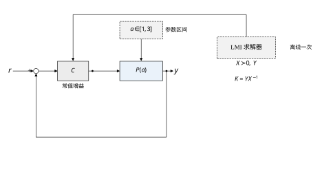
图 65-1 是这个结构的形状，和前面几章的框图有一处本质差别：求解器不在回路里。它只在设计阶段被调用一次，吐出 X、Y 和 K=YX^{-1}；投运之后回路里跑的仍然是一个常值增益矩阵，和 LQR 没有任何区别。这一点常被误解——“凸优化控制”听起来像是在线优化，其实绝大多数 LMI 设计都是离线的，在线成本为零。真正需要在线求解的是 MPC（第 58 章）和自适应（第 61 章），它们每一拍都要重算，那是另一类问题。
第一次跑这个算例时，我想直接问“最大衰减率是多少”，于是把 \alpha 也当成决策变量：
\max\ \alpha\quad\text{s.t.}\quad AX+XA^{\mathsf T}-BY-Y^{\mathsf T}B^{\mathsf T}+2\alpha X\preceq0,\quad X\succ0 \tag{65-10}
求解器在 3 ms 内返回 optimal，\alpha=19.9999——正好顶在我给二分的上界 20 上。对应的增益是 K_1\approx10^4 量级。如果信了这个数，结论会是“这台机器能做到 20 1/s 的衰减率，比 LQR 强二十倍”，而真相是式 (65-10) 这个问法本身没有下限。
原因只有一句话：式 (65-8) 对 (X,Y) 是齐次的。若 (X,Y,\alpha) 可行，则对任意 t>0，(tX,tY,\alpha) 也可行——不等式两边同乘 t，不变号。齐次意味着“尺度”这个自由度完全没被约束，而 \alpha 恰好可以通过缩 X 来换：把 X 缩到 \epsilon I，2\alpha X 这一项也缩到 \epsilon，-BY-Y^{\mathsf T}B^{\mathsf T} 却要靠 Y 保持量级，于是 K=YX^{-1} 被放大 1/\epsilon 倍。\alpha 想多大，就让增益多大，一直到数值精度撑不住为止。
修法很朴素：给 X 一个下界，
X\succeq I \tag{65-11}
加上这一条，\alpha 立刻从 19.9999 掉到 0.9277，增益回到 K=[5.1188,\,2.9007] 这种正常量级。式 (65-11) 不是“数学上的美化”，它是在给问题补一条缺失的尺度约定：X 的量纲是“状态的平方的倒数”，X\succeq I 相当于声明“我用米和米每秒来度量状态，并且 Lyapunov 椭球不比单位圆小”。换单位，这个界就要跟着换，这一点 §65.10 会用一组实验说明。
同样的事在 H∞ 里又发生了一次，而且更隐蔽。把 \gamma 当变量最小化时，求解器给出 \gamma=1.0004、K=[21730,\,21313]——\gamma 的下界恰好是 \|D_{12}\|=1，于是一个无穷大增益把 \gamma 顶到了理论下界。式 (65-11) 挡不住它，因为这里被牺牲的不是尺度而是控制能量：\gamma 只惩罚 z=C_1x+D_{12}u，而 u 的代价可以通过“状态瞬间归零”来规避。修法是再加一条显式的增益界
\begin{bmatrix}\kappa^2 I&Y\\ Y^{\mathsf T}&I\end{bmatrix}\succeq0 \quad\Longleftrightarrow\quad \|Y\|\le\kappa \quad\Longrightarrow\quad \|K\|=\|YX^{-1}\|\le\kappa\ \ (X\succeq I) \tag{65-12}
取 \kappa=20，\gamma 回到 9.1759。这两个事故放在一起，给出本章最该记住的一句话：
LMI 把“难解”变成了“可解”，但没有把“问错问题”变成“问对问题”。求解器只会回答你写的那个问题，而且它总是很乐意回答一个没有下界的问题。
后面每一节都会带上“这条约束在防什么”的说明，原因就在这里。一个能跑出 optimal 的 LMI，离一个能用的设计还差三步：归一化、增益界、真值对拍。
在展开推导之前，先把本章要反复回访的三组数字摆出来，它们分别对应“保守”“退化”“代价”三件事。
第一组，衰减率。 三种表述下的最大值：公共 Lyapunov（一个 P 管住全部 a）0.9277；顶点独立（每个 a 一套 P 和 K，需要在线调度）1.2207；范数有界不确定性加 D 缩放 0.9277。前两个数差 32%，是“不知道 a”的代价；第三个数与第一个完全相同，说明在这个算例上“把 a 写成 A_0+D\delta E 再用小增益定理处理”没有带来额外保守性——因为 \delta 的界和区间端点正好对齐。换成非对称区间或者多个不确定参数，这个等式就不成立了。
（这三个数都在增益界 \kappa=6 之下。§65.9 会说明：这个界本身也在限制性能，把它放宽到 20，两个 \alpha 都会涨，而 32% 的差距会缩到 7.6%。“不知道 a”的代价没有想象中那么大。）
第二组，H∞。 多胞 LMI 给出的证书是 \gamma=9.1759，而这套增益在参数网格上实测的最坏 \|T_{zw}\|_\infty 只有 1.9506（在 a=3 取到）。证书比真值保守 4.7 倍。保守来自两处：一是二次 Lyapunov 函数本身（它要求同一个 V 在整个参数区间上都下降），二是用同一个 \gamma 覆盖整个频段和整个参数区间。这个差距不是程序错误，是“充分条件”的固有代价，§65.9 会把它拆开。
第三组，不变椭圆。 同一台对象、同样的状态与控制约束（|x_1|\le1 m、|u|\le1 m/s^2），\alpha=0 的增益下最大不变椭圆面积 1.1896，\alpha=0.928 的增益下只有 0.6146——增益从 [3.0113,\,1.7395] 涨到 [5.1188,\,2.9007]，可用吸引域面积几乎减半。这和第七章讲的“带宽拉高，饱和先到”是同一个现象的两种说法。
后面十一节按“原理—步骤—连续—离散—性能—参数—调参—改进—落地—边界—代码”展开。§65.2 把式 (65-8) 背后的引理补齐（Lyapunov、有界实、S-procedure、Schur 补），§65.3 给出可以照抄的五步流程，§65.4 用连续域的三套增益把“保守”和“退化”都落到波形上，§65.5 转到离散域（采样周期一大，LMI 直接不可行，这个“不可行”本身就是有用信息），§65.6 讨论稳定性与性能指标怎么定，§65.7 逐个解释决策变量 X、Y、\varepsilon、\gamma、\kappa 的物理含义，§65.8 讲调参与求解器选择（同一道题四个求解器，耗时差两个数量级），§65.9 讲保守性怎么降（S-procedure、松弛变量、多胞细化），§65.10 讲工程落地（缩放、条件数、控制器降阶），§65.11 讲这套方法的边界，§65.12 给完整代码。
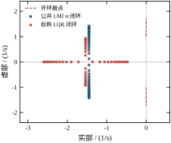
图 65-2 先把“参数移动”这件事画出来。左侧虚线上的点是开环极点 \pm\sqrt{a}，随 a 从 1 到 3 上下拉开；右侧两簇点是两套定常增益的闭环极点。公共 LMI 增益（实心深蓝）的轨迹是一对共轭复根，a=1 时在 -0.87\pm1.12j（阻尼比 0.613），a=3 时几乎落到实轴上（-1.45\pm0.124j，阻尼比 0.996）；标称 LQR 增益（红色）在 a=2 处是两个实极点，往两端走时一对极点迅速分离，a=3 时分到 -0.475 和 -2.603。两簇点的分布说明了公共 LMI 在设计上做了什么取舍：它把“最坏情况”的极点实部压在 -0.87 附近，代价是在 a=1 那一端牺牲了阻尼（0.613 对 0.855）。这个取舍是否合理，取决于你的指标写的是“衰减率”还是“阻尼比”——这正是 §65.6 要讨论的事。
§65.1 用一句话概括了技术核心——换变量。但要让这套方法真的能用，还需要四个工具：把谱条件翻译成矩阵不等式的 Lyapunov 定理、把“传递函数范数小于 \gamma”翻译成矩阵不等式的有界实引理、把“缩成一个块”的 Schur 补、把“对所有 \delta 成立”翻译成“存在一个 \varepsilon”的 S-procedure。这一节逐个交代，每个都给一句“它在后面哪一节被用到”。
先把“什么叫 LMI”说准。一个线性矩阵不等式是
F(x)=F_0+\sum_{i=1}^{m}x_iF_i\succ0 \tag{65-13}
其中 F_i=F_i^{\mathsf T}\in\mathbb{R}^{n\times n} 是给定的对称矩阵，x\in\mathbb{R}^m 是决策变量。左边对 x 是仿射的，约束集 \{x:F(x)\succ0\} 是凸的（正定锥的原像）。当 n=1 时它退化成普通的线性不等式，所以线性规划是 LMI 的特例；n>1 时它叫半定规划（SDP）。
式 (65-8)、式 (65-10) 都不是标准形，因为约束里出现了 X 的逆和乘积。把它们变回标准形靠 Schur 补：
\begin{bmatrix}A&B\\ B^{\mathsf T}&C\end{bmatrix}\prec0,\quad C\prec0 \quad\Longleftrightarrow\quad A-BC^{-1}B^{\mathsf T}\prec0 \tag{65-14}
这个引理的作用是把逆挪到分母里去。凡是出现 A-BC^{-1}B^{\mathsf T} 这种带逆的形式，都可以用一个更大的矩阵块替换，代价是变量维数变大（从 n 变成 n+m），换来的是线性。本章后面几乎每一个“看起来不是 LMI”的约束，都是用式 (65-14) 变成 LMI 的。它的证明只需对左边的矩阵做一次分块消元，这里不重复。
对线性系统 \dot x=Ax，下面两条等价：
“1 推出 2”是构造性的：取 P=\int_0^\infty e^{(A+\alpha I)^{\mathsf T}t}e^{(A+\alpha I)t}\,dt，由条件 1，被积函数指数衰减，积分收敛且正定，代进去正好满足不等式。“2 推出 1”更简单：设 Av=\lambda v，左乘 v^* 右乘 v 得 2(\mathrm{Re}\lambda+\alpha)v^*Pv<0，而 v^*Pv>0，所以 \mathrm{Re}\lambda<-\alpha。
这个定理的分量在于它是一个充要条件。对单个确定的 A，“极点都在左边”和“存在一个二次 Lyapunov 函数”是同一句话。所以本章用 LMI 求解稳定性，不是“用一个充分条件近似”，而是在解一个等价问题——至少在参数固定时是这样。一旦参数变成一个区间，“存在公共 P”就退化成充分条件了，因为真实的系统可以每个 a 用不同的 V，而公共 P 强制共用一个。§65.1.2 里 0.9277 与 1.2207 的差额，就是这次退化的价格。
\alpha 出现在式 (65-9) 里时是“衰减率”，出现在式 (65-5) 里时是“极点实部的负下界”。两者是同一件事的两种说法：V 的衰减速率等于最慢极点的实部（在二次型 V 下恰好相等，一般的 V 只能给出下界）。
H∞ 指标问的是“从扰动 w 到被调输出 z 的传递函数，在所有频率上的最大增益”。对本章的算例，取 w 为作用在加速度上的外部扰动、z 为位置与控制量的加权组合：
z=C_1x+D_{12}u,\qquad C_1=\begin{bmatrix}1&0\end{bmatrix},\quad D_{12}=\rho=1 \tag{65-15}
闭环 u=-Kx 之后 z=(C_1-D_{12}K)(sI-A+BK)^{-1}B_w\,w，记这个传递函数为 T_{zw}(s)。有界实引理说：A-BK 稳定且 \|T_{zw}\|_\infty<\gamma，当且仅当存在 P\succ0 使
\begin{bmatrix} (A-BK)^{\mathsf T}P+P(A-BK)&PB_w&(C_1-D_{12}K)^{\mathsf T}\\ B_w^{\mathsf T}P&-\gamma I&0\\ C_1-D_{12}K&0&-\gamma I \end{bmatrix}\prec0 \tag{65-16}
这个 3\times3 块矩阵是本章 H∞ 部分全部工作的起点。左右各乘 \mathrm{diag}(X,I,I)（X=P^{-1}），并把 KX 换成 Y，得到
\begin{bmatrix} AX+XA^{\mathsf T}-BY-Y^{\mathsf T}B^{\mathsf T}&B_w&(C_1X-D_{12}Y)^{\mathsf T}\\ B_w^{\mathsf T}&-\gamma I&0\\ C_1X-D_{12}Y&0&-\gamma I \end{bmatrix}\prec0 \tag{65-17}
对 (X,Y) 线性，对 \gamma 也是线性的（\gamma 只出现在对角块上）。于是“最小化 \gamma”就是一个标准的 SDP，可以用二分也可以用凸求解器直接做。code/ch065_sim.py 里用的是外层二分：给定 \gamma 判可行，不可行就抬高，\gamma 的精度由二分的终止条件控制（本章取 10^{-3}，共 16 次求解）。
用 Schur 补可以把式 (65-17) 再压成 2\times2，但那会引入 \gamma^{-1} 与 X 的乘积，反而不是 LMI。保持 3\times3 是刻意的：块越大越“松”，但越线性。这也是 LMI 建模的一条通用经验——宁可多加一块，不要提前消元。
式 (65-16) 里有一个容易被忽略的细节：D_{11}=0（扰动不直接进输出）。如果 D_{11}\neq0，右下角要换成 -\gamma I 与 D_{11} 的组合，\gamma 的下界会变成 \|D_{11}\|，可行性问题在 \gamma<\|D_{11}\| 时直接不可行。本章的 \gamma 下界来自 \|D_{12}\|=1，这就是 §65.1.4 里那个 \gamma=1.0004 的来源。
A(a) 是仿射的，可以直接用顶点。但工程上更常见的不确定性写法是“标称值加一个范数有界的摄动”：
A=A_0+D\,\delta\,E,\qquad |\delta|\le1,\qquad A_0=\begin{bmatrix}0&1\\2&0\end{bmatrix},\quad D=\begin{bmatrix}0\\1\end{bmatrix},\quad E=\begin{bmatrix}1&0\end{bmatrix} \tag{65-18}
（a=2+\delta，\delta\in[-1,1]，正好覆盖 [1,3]。）这种写法下，Lyapunov 不等式变成
M+\delta\bigl(DEX+XE^{\mathsf T}D^{\mathsf T}\bigr)\prec0,\qquad \forall\,|\delta|\le1 \tag{65-19}
其中 M=A_0X+XA_0^{\mathsf T}-BY-Y^{\mathsf T}B^{\mathsf T}+2\alpha X 与 \delta 无关。要让它对所有 |\delta|\le1 成立，直接的做法是取两个端点（这又回到顶点法）；另一种做法是对交叉项配方，用 2ab\le a^2+b^2：
\delta\bigl(DEX+XE^{\mathsf T}D^{\mathsf T}\bigr) \preceq \varepsilon\,DD^{\mathsf T}+\varepsilon^{-1}(EX)^{\mathsf T}(EX), \qquad \forall\,|\delta|\le1,\ \forall\,\varepsilon>0 \tag{65-20}
于是式 (65-19) 被一个更强的条件代替：
M+\varepsilon DD^{\mathsf T}+\varepsilon^{-1}(EX)^{\mathsf T}(EX)\prec0 \tag{65-21}
再用一次 Schur 补，把 \varepsilon^{-1}(EX)^{\mathsf T}(EX) 收进块里：
\begin{bmatrix} M+\varepsilon DD^{\mathsf T}&(EX)^{\mathsf T}\\ EX&-\varepsilon I \end{bmatrix}\prec0 \tag{65-22}
\varepsilon 是新的决策变量（非负标量），可以和其他变量一起交给求解器。这就是 S-procedure 的标准用法：把“无穷多条关于 \delta 的约束”换成“一条关于 \varepsilon 的约束”，代价是引入保守性（配方那一步是不等号，\varepsilon 取多大是优化出来的）。
值得说清的是保守性的来源。对单个标量 \delta 加单个二次型约束，S-procedure 是无损的——也就是说式 (65-21) 与式 (65-19) 等价。本章实测也印证了这一点：范数有界表述给出的最大衰减率 0.9277，与直接验两个顶点的公共 Lyapunov 0.9277 完全一致，\varepsilon 的最优值是 4.7299。换成两个独立的不确定参数，无损性立刻消失，那才是 S-procedure 真正开始保守的地方，§65.9 会给出数字。
式 (65-4) 那个“只需验两个端点”的结论，成立的条件比通常写的要苛刻，值得列清楚：
四条里任何一条不满足，“只验顶点”就只是一次采样，不能当证明。工程上最容易踩的是第 1 条：很多人把“参数在某区间”直接当成“仿射多胞”，而实际上参数是以非线性方式进来的（刚度随气隙三次方变化、电阻随温度指数变化），这时候顶点验过了也不代表中间没问题。补救办法是把非线性段用分段仿射外包，或者干脆在网格上做真值对拍——这也是 §65.9 的“证书核验”要占一整小节的原因。
离散域的对应物是 x_{k+1}=A_dx_k+B_du_k，稳定性条件是谱半径小于 1，Lyapunov 版本是“存在 P\succ0 使 A_d^{\mathsf T}PA_d-P\prec0”。加上收缩率 \sigma\in(0,1)：
A_d^{\mathsf T}PA_d-\sigma^2P\prec0 \quad\Longleftrightarrow\quad \begin{bmatrix}\sigma^2X&A_dX\\XA_d^{\mathsf T}&X\end{bmatrix}\succ0 \tag{65-23}
右边是式 (65-14) 的直接应用（把 A_d^{\mathsf T}PA_d 看成 B C^{-1}B^{\mathsf T} 那一项）。X=P^{-1}，闭环 A_d-B_dK、Y=KX 之后：
\begin{bmatrix}\sigma^2X&A_dX-B_dY\\ (A_dX-B_dY)^{\mathsf T}&X\end{bmatrix}\succeq0 \tag{65-24}
形式和连续域几乎一样，只是“\prec0 的 Lyapunov 不等式”变成了“\succeq0 的块矩阵”，而且 \sigma 与连续域的 \alpha 之间有一个明确的换算：
\sigma=e^{-\alpha T_s} \tag{65-25}
这个换算不是装饰，它决定了不同采样周期下的结果能不能互相比较。如果每个 T_s 都只写“可行性”（不带 \sigma），求解器会退到边界上，给出 \rho(A_{cl})\approx1.0000 的“能稳但一点都不快”的解，且不同 T_s 之间的增益几乎不变——这个坑 §65.5 会用一整组数据展示。带上式 (65-25) 之后，T_s 从 0.005 s 增到 0.8 s，K_1 从 5.0093 降到 3.9092，\rho 从 0.9931 降到 0.4813，趋势才和物理直觉一致。
还有一件事：离散 LMI 的可行域随 T_s 增大而收缩，到某个 T_s 会直接不可行。本章实测有两条边界：\alpha=0.9 的可行性在 0.8 s 与 1.0 s 之间断掉；只要求稳定（\sigma=1）时，1.0 s 仍可行（\rho=0.9812），1.5 s 才断。这个“不可行”不是程序失败，而是定量回答了“这台机器最慢能多久采一次样”，比任何经验法则都硬。
把这一节压缩成一张表：
| 工具 | 输入 | 输出 | 用在哪一节 |
|---|---|---|---|
| Lyapunov 定理 | 谱条件 \mathrm{Re}\lambda<-\alpha | A^{\mathsf T}P+PA+2\alpha P\prec0 | §65.4 连续设计 |
| Schur 补 | 带 C^{-1} 的块 | 更大的线性块矩阵 | §65.2.4、§65.5、§65.9 |
| 有界实引理 | \|T_{zw}\|_\infty<\gamma | 式 (65-17) 的 3\times3 块 | §65.9 H∞ |
| S-procedure | \forall\|\delta\|\le1 | 存在 \varepsilon，式 (65-22) | §65.4 范数有界、§65.9 降保守 |
四个工具里，只有 Lyapunov 定理是充要的，其余三个都带“充分”的成分。这就是为什么 LMI 设计出来的结果总是“保守”的——不是因为求解器不行，而是因为从“我要这个性能”到“我写下的这条 LMI”之间，隔了三道充分条件的门。
这一节把前面两节的东西压成一条可以照抄的流水线。流程图在图 65-11，五个方框对应五步，中间的判断框是唯一需要人做决定的地方——证书和真值对不上时，回到第一步重写指标，而不是回到第四步调求解器。这条规矩看起来是常识，实际项目里被违反的次数最多：求解器报 optimal 太容易让人相信了。
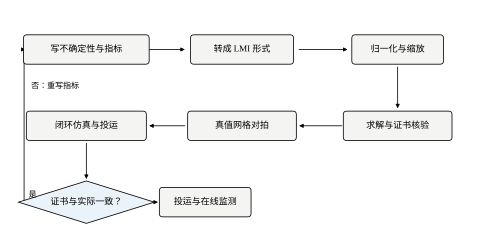
这一步没有公式可套，但它决定了后面四步有没有意义。以磁悬浮为例，真实的不确定源至少有三个：气隙变化让电流刚度变（k_i 随气隙非线性下降）、载荷变化让质量变（m 从空载到满载差 30%）、线圈温度让电阻变（影响电流环带宽，进而不影响 a 但影响执行器滞后）。三者合成到 a=k_i/m 上，可能得到 a\in[0.8,\,3.2] 这样一个区间。
接下来要做的不是“把这个区间原样塞进 LMI”，而是三件事：
第一，判断哪个参数是主导的。 如果 k_i 的变化贡献了区间宽度的 80%，m 只贡献 20%，那就把 k_i 当不确定参数、m 当标称值加上一个固定裕度。理由很实际：多一个不确定参数，多胞的顶点数翻倍（n 个参数、每个两端点，顶点数 2^n），而顶点数直接决定 LMI 的规模和保守性。两个参数时 4 个顶点，三个参数时 8 个，五个参数时 32 个——到那个时候，保守性会把设计压得没有性能可言，反而不如把次要参数折进“设计裕度”里。
第二，确认参数是以仿射方式进来的。 磁悬浮的 a 是 k_i/m，如果 k_i 和 m 各自独立变化，a 就不是仿射的。这时候要么把 a 本身当参数（承认它是个“黑箱区间”），要么做变量替换把 1/m 提出来。本章的算例直接取 a 为参数，就是为了避开这层麻烦——但读者要知道，这层麻烦在真实项目里是躲不掉的。
第三，把“性能”写成可以比较的数。 “响应要快”不是指标，“衰减率 \alpha\ge0.9”才是；“抗扰要好”不是指标，“\|T_{zw}\|_\infty\le3”才是。写不出数的时候，先做一个标称设计，量一下它达到多少，再把这个数打个折当目标。这一步看着粗糙，但比拍脑袋定 \alpha=5 然后发现不可行要好。
同一个“对区间内所有 a 稳定”，至少有三种写法，保守性和计算量都不一样：
| 表述 | 约束形式 | 顶点数 | 保守性 | 适用场景 |
|---|---|---|---|---|
| 顶点法（公共 P） | 式 (65-8)，每个顶点一条 | 2^n | 中 | 参数区间已知且仿射 |
| 范数有界 + S-procedure | 式 (65-22)，\varepsilon 是变量 | 1 | 中（单参数时无损） | 只知道摄动范数上界 |
| 顶点独立（调度） | 每个顶点一套 (X_i,Y_i) | 2^n | 低 | 能在线测到参数 |
选哪一条取决于两个事实：你知不知道参数怎么进来的，你能不能在线上测到它。知道且能测，用调度（顶点独立），性能最好；知道但不能测，用顶点法；连怎么进来的都不清楚，只剩范数上界，用 S-procedure。本章会三种都算一遍，它们的最大衰减率分别是 1.2207、0.9277、0.9277，正好把这张表的“保守性”一列量化了。
这一步是 §65.1.4 那个事故的直接产物。写完 LMI 之后，在交给求解器之前，强制加三条：
（1）尺度归一化 X\succeq I。 防的是齐次性导致的 \alpha 无界。它的副作用是把 X 的量纲钉在“状态单位的平方的倒数”上，所以换单位必须重算（§65.10 有七档缩放的实测）。
（2）增益界 \|Y\|\le\kappa。 防的是“用无穷大增益换指标”。\kappa 取多少？经验是标称 LQR 增益的 3–5 倍。本章的标称 LQR 增益范数是 \sqrt{4.2361^2+3.0777^2}=5.24，取 \kappa=20 相当于 3.8 倍，够松，又足以挡住 10^4 量级的退化解。取得太小（比如 \kappa=6）会把可行域切掉一块，\gamma 被人为抬高；取得太大（\kappa=10^4）等于没加。
（3）目标函数 \min\|Y\|_F。 纯可行性问题（没有目标）的解不唯一，求解器返回的是它内部迭代停下的那个点，可能是任何一个可行解。加一个“最小增益”的目标，解就唯一了，而且通常是同一可行域里最“温和”的那个。这条对可复现性至关重要：同一份代码在不同机器上跑，没有目标函数时可能给出不同的 K，有目标函数时至少落在同一个极值点上。
三条加完，问题才是一个“良定义”的 LMI。本章所有实验结果都在这三条之下得到，代码里的 common_lmi()、hinf_lmi()、disc_lmi() 三个函数都显式带着它们。
求解本身只是一行 prob.solve()，麻烦的是判断这个解能不能信。至少要核四件事：
第一，求解器状态。 cvxpy 返回的状态有 optimal、optimal_inaccurate、infeasible、unbounded、solver_error 五种。只有前两种能用，而 optimal_inaccurate 需要额外核残差。本章四个求解器的实测里，SCS 给的是 optimal_inaccurate，耗时 751.23 ms；CLARABEL 给的是 optimal，耗时 6.15 ms。同一道题，一个“可信但慢”，一个“可信且快”。
第二，约束残差。 把解出来的 X、Y 代回式 (65-8)，算左边矩阵的最大特征值。理论上应该 <0，实际上会有 10^{-9} 到 10^{-6} 的正值（数值误差）。如果最大特征值是 +10^{-3} 量级，说明解在可行性边界外面，不能用。这个检查要写成代码，不能靠“求解器说 optimal 就行”。
第三，X 的条件数。 \mathrm{cond}(X) 超过 10^{6} 时，K=YX^{-1} 的数值精度就开始不可靠了。本章的缩放的实测里，s=10^{-3} 时条件数是 6.85\times10^{6}，此时解出来的 K=[5.58,\,3.441] 与最优单位下的 [5.403,\,3.057] 已经差了一截——不是算法错，是求逆把误差放大了。
第四，K 的量级。 如果 K 的某个分量超过 10^3，先怀疑是不是漏了归一化或增益界，再怀疑对象。10^3 量级的增益在物理上意味着“位置差 1 mm 就给出 1 m/s^2 的指令”，这已经不是控制，是开关。
这四条检查加起来不到二十行代码，但它们把“跑出结果”和“结果可信”分开了。
证书说“对所有 a 稳定”，真值对拍要回答“到底有多稳、在哪个 a 最差”。做法是在参数区间上铺网格，逐点算极点和阻尼比。本章用 41 个点（步长 0.05），算出来的结果是：
\zeta_{\min}=0.6133\ \text{@}\ a=1.00,\qquad \max_a\mathrm{Re}\,\lambda(A(a)-BK)=-0.0065\ \text{@}\ a=3.00 \tag{65-26}
两个数分处区间的两端，这件事本身是有信息的：阻尼最差在 a 的下界，衰减最慢在 a 的上界。它们分别对应 §65.1.1 说的两种失败方式——a 小的时候回路软、阻尼低；a 大的时候负刚度强、最慢极点被顶到接近虚轴（-0.0065，时间常数 154 s）。
还有一个更值得注意的地方：\alpha=0 那套增益（K=[3.0113,\,1.7395]）在 a=3 处的最慢极点只有 -0.007，几乎贴着虚轴。可是这套增益是 LMI 求解器在“保证稳定”的约束下给出的，状态是 optimal。它确实稳定，只是“稳定”这两个字在这里的含义薄到几乎为零——一个 154 s 的时间常数，在现场等同于“慢慢漂走”。这再次说明：没有 \alpha 的可行性问题只回答“能不能活”，不回答“活得好不好”，而求解器不知道你想要后者。
对 H∞ 的对拍更重：本章用 4000 个频点乘以 241 个参数点，算出每个 (a,\omega) 上的 \|T_{zw}\|，取最大值。得到的结果是 1.9506 @ a=3，而 LMI 证书是 9.1759。这个 4.7 倍的差距是本章最重要的一个数字，§65.9 专门处理它。
把上面的内容压成一张可以打印出来贴在工位上的表：
| 步骤 | 必做动作 | 常见错误 | 后果 |
|---|---|---|---|
| 1 写指标 | 定主导参数、确认仿射、指标写成数 | 参数超过 3 个 | 顶点爆炸，保守性失控 |
| 2 选表述 | 按“知不知/测不测”选 | 把非线性参数当仿射 | 顶点验过但中间不稳 |
| 3 归一化 | X\succeq I、\|Y\|\le\kappa、\min\|Y\| | 漏掉任一条 | \alpha 或 \gamma 无界 |
| 4 求解 | 核状态、残差、\mathrm{cond}(X)、|K| | 只看 optimal |
拿到不可用的解 |
| 5 对拍 | 网格扫极点、扫频算范数 | 只验顶点 | 证书与真值脱节而不自知 |
表 65-3 LMI 设计的五步与对应的坑
表 65-3 的“后果”一列是这一节最该记住的部分。五步里任何一步偷懒，都不会让程序报错——它会给你一个 optimal 的解，然后你在现场花两周去找原因。这也是为什么本章坚持每一个结论都用真值对拍：LMI 的输出是一个“证书”，证书的正确性靠数学保证，证书的有用性只能靠对拍验证。
这一节把前面的框架跑成三套具体的增益，然后看它们在三台“不同 a 的机器”上的表现。三套增益的设计过程完全相同——都是式 (65-8) 加 X\succeq I 加 \min\|Y\|_F——唯一的差别是 \alpha 取多少，以及要不要让 K 随 a 变。
第一套，\alpha=0 的公共 Lyapunov 设计。 只要求“存在一个 P 管住两个顶点”，不要求衰减率。求解器返回 X\succeq I 边界上的解（因为目标是最小化 \|Y\|，X 越大 \|K\|=\|YX^{-1}\| 越小，所以 X 顶在 I 上），得到
K_{\alpha=0}=[3.0113,\ 1.7395] \tag{65-27}
这套增益的范数是 3.48，比标称 LQR 的 5.24 还小。看着很“温柔”，但 §65.3.5 已经暴露了它的代价：a=3 时最慢极点 -0.007，时间常数 154 s。
第二套，\alpha=0.9277 的公共设计。 这个 \alpha 是用 16 次二分搜出来的最大值（区间 [0,20]，精度 10^{-3}，最后一次可行是 0.9277、第一次不可行是 0.9287）。增益是
K_{\alpha=0.928}=[5.1188,\ 2.9007] \tag{65-28}
范数 5.88，比标称 LQR 略大 12%。这 12% 就是“要保证 0.93 的衰减率，同时对两个 a 都成立”所必须多付的控制量。
第三套，标称 LQR。 在 a=2 上做标准 LQR，K=[4.2361,\,3.0777]，范数 5.24。它不是 LMI 解出来的，放在这里是为了给一个“不懂鲁棒性的人会怎么做”的参照。
三套增益列在一起，有一个反直觉的现象：\alpha=0 的设计增益最小，\alpha 最大的设计增益居中，标称 LQR 的增益介于两者之间。 按“增益越大越激进”的直觉，这个排序是乱的。原因在于它们优化的东西不同：\alpha=0 优化的是增益范数（所以最小），\alpha=0.928 优化的是守恒的衰减率（需要额外的控制量，但不是最多），标称 LQR 优化的是二次型代价（在标称点上最省，但不管两端）。
图 65-3 把三种表述下的最大衰减率画成条形图，可以直观看到“知道参数”值多少。
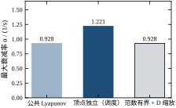
中间那根深色柱子是顶点独立设计——每个顶点一套 (X_i,Y_i)，相当于“在线能测到 a”。它的 1.2207 比公共设计的 0.9277 高 32%。这个差额不是算法优劣，是信息量的价格：多知道一个数（a 的当前值），换 32% 的响应速度。右边那根柱子和左边一样高，是范数有界表述；在这个单参数算例上，S-procedure 没有额外损失（§65.2.4 已经解释过原因）。
把三套增益分别放到 a=1、2、3 三台机器上，做 1 m 的阶跃，得到九个组合。评价六项：闭环极点、最弱阻尼比、调节时间（5% 带）、稳态误差、超调、控制量峰值。
| 增益 | a | 闭环极点 | \zeta_{\min} | t_s / s | e_{ss} | 超调 | \|u\|_{\max} |
|---|---|---|---|---|---|---|---|
| 公共 LMI（\alpha=0） | 1 | -0.87\pm1.12j | 0.613 | 8.00 | 0.4969 | 0.0% | 1.011 |
| 公共 LMI（\alpha=0） | 2 | -0.87\pm0.505j | 0.865 | 3.75 | 0.0019 | 0.5% | 2.020 |
| 公共 LMI（\alpha=0） | 3 | -0.007,\ -1.733 | 1.000 | 8.00 | 3.2351 | 323.5% | 12.707 |
| 公共 LMI（\alpha=0.928） | 1 | -1.45\pm1.42j | 0.715 | 8.00 | 0.2428 | 0.0% | 3.119 |
| 公共 LMI（\alpha=0.928） | 2 | -1.45\pm1.008j | 0.821 | 1.98 | \approx0 | 1.1% | 3.119 |
| 公共 LMI（\alpha=0.928） | 3 | -1.45\pm0.124j | 0.996 | 8.00 | 0.4718 | 47.2% | 4.416 |
| 标称 LQR | 1 | -1.539\pm0.932j | 0.855 | 8.00 | 0.3090 | 0.0% | 2.236 |
| 标称 LQR | 2 | -1.176,\ -1.902 | 1.000 | 3.31 | 0.0002 | 0.0% | 2.236 |
| 标称 LQR | 3 | -0.475,\ -2.603 | 1.000 | 8.00 | 0.7597 | 76.0% | 5.290 |
表 65-4 三套增益在三个参数点上的九种组合
这张表要横着读，也要竖着读。
横着读（同一套增益，参数往大漂），三套增益的表现都随 a 变差，但变差的方式不同。\alpha=0 那一组在 a=3 处直接崩了：稳态误差 3.2351 意味着指令 1 m、实际冲到 4.235 m 还在往上升（后面会算，它的理论稳态是 89.5 m）；峰值 323.5%、控制量 12.707。\alpha=0.928 那一组在 a=3 时峰值 47.2%、e_{ss} 0.4718，虽然不好看，但至少还在同一个量级。标称 LQR 在 a=3 时峰值 76.0%，介于两者之间。
竖着读（同一个 a，换增益），会看到一件更重要的事：没有一套增益在三个点上都是最好的。 a=1 时标称 LQR 的阻尼（0.855）最好；a=2 时它也是最好的（两个实极点、零超调、t_s=3.31）；a=3 时它的超调（76.0%）比 \alpha=0.928 那套（47.2%）还差。而 \alpha=0 那套的唯一优势是控制量小（a=1 时 1.011，几乎不饱和），代价是静差 0.4969。
表 65-4 里最刺眼的是 \alpha=0 增益在 a=3 那一行。三个数分别是：e_{ss}=3.2351、超调 323.5%、|u|_{\max}=12.707。它们不是独立的，是同一个原因的三个侧面。
先算稳态。前馈系数按标称点取 k_r=K_1-a_{\text{nom}}=3.0113-2=1.0113（这几套增益都用同一个前馈，因为它们都不知道真实的 a）。稳态时 \ddot x_1=0，即 a x_1+u=0；而 u=k_r-K_1x_1。两式联立：
x_{1,\infty}=\frac{k_r}{K_1-a}=\frac{K_1-a_{\text{nom}}}{K_1-a} \tag{65-29}
这个式子很小，但它把“参数漂移”的后果一次说清了。分母 K_1-a 是位置环的开环增益（把速度环闭合之后剩下的那个增益），分子是前馈量。a 越接近 K_1，分母越接近零，稳态增益越趋于无穷。对 K_1=3.0113 这套增益，a=3 时分母只有 0.0113，于是
x_{1,\infty}=\frac{1.0113}{0.0113}=89.5 \tag{65-30}
也就是指令 1 m，稳态会走到 89.5 m。仿真只跑 8 s，x_1 才爬到 4.235，看上去“只是”323.5% 的超调，实际它是这条爬向 89.5 的慢曲线的第一段。8 s 内它一直在上升，从未回落，因为最慢极点的时间常数是 154 s。
这就解释了 |u|_{\max}=12.707：为了把状态从 0 推到 4.2 m，控制量早就顶穿了 1 m/s^2 的物理限幅（12.7 倍）。表里所有“|u|_{\max}>1”的行，在真实设备上都会饱和，而饱和后的行为完全不在 LMI 的保证范围内——LMI 证明的是线性闭环的稳定性，限幅一进来，那个证明就失效了。这一点在 §65.11 还会展开。
同样的算式用在 \alpha=0.928 那套上：K_1=5.1188，a=3 时分母 2.1188，x_{1,\infty}=3.1188/2.1188=1.472，e_{ss}=0.472，与实测 0.4718 完全吻合。a=1 时 x_{1,\infty}=3.1188/4.1188=0.757，e_{ss}=0.243，也与实测 0.2428 吻合。式 (65-29) 在两套增益上都被验证了。
图 65-4 把九个组合里的九个响应画成三格（每格一个 a，三条曲线分别是三套增益）。
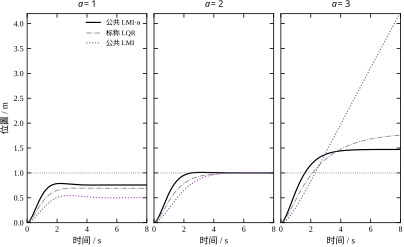
左格（a=1）最“和平”：三条曲线都无超调，\alpha=0.928 那条最快但也最“硬”（控制量 3.119），标称 LQR 那条的阻尼最好。这一格里 \alpha=0 那条的稳态只到 0.503，肉眼可见地停在半路——这就是 0.4969 的静差。
中格（a=2）是三套增益的“主场”，因为标称点就在这里。\alpha=0.928 的调节时间 1.98 s 最短，比标称 LQR 的 3.31 s 还快 40%，这一点值得注意：LMI 设计在标称点上可以比 LQR 更快，因为它的目标不是二次型代价，而是衰减率。LQR 的 1.176/1.902 双实极点里，慢的那个 1.176 决定了调节时间；而 \alpha=0.928 那套把两个极点都推到了 -1.45 附近，慢极点被抬高了 23%。
右格（a=3）是“事故现场”。\alpha=0 那条曲线一路上冲、8 s 时还在 4.2 附近，图上的纵轴只能截到 4.2，实际它要爬到 89.5。\alpha=0.928 那条冲到 1.47 后回落，但 8 s 内没回到 1.05 的带内（所以 t_s 记为 8.00，是仿真时长的上限）。标称 LQR 那条冲到 1.76，回落更慢且稳态更高（0.7597 的静差）。
三格放在一起，能看出一条设计规律：参数往哪边漂，设计就该往哪边偏。 如果现场知道 a 只会往大漂（比如载荷只会增加），那就该按 a=3 做设计，让 a=2 时“过设计”一点；本章的区间设计是“两端都要管”，所以必然在中间点上浪费一些性能。这个浪费的量，就是 §65.6 要量化的“鲁棒代价”。
三套增益对应三种现场条件，选法不难：
| 现场条件 | 推荐 | 理由 | 代价 |
|---|---|---|---|
| 参数几乎不变，只要标称点好 | 标称 LQR | 标称点最优，计算最简 | 漂 50% 就 76% 超调 |
| 参数会漂，但测不到 | 公共 LMI（带 \alpha） | 全区间有证书，标称点反而更快 | 增益大 12%，两端各让一步 |
| 参数会漂，且能测 | 顶点独立（调度） | 全区间最快 | 需要传感器与调度逻辑 |
| 只要不散架，控制量越小越好 | 公共 LMI（\alpha=0） | 增益最小 | 静差与慢极点都不可接受 |
表 65-5 三套增益的适用条件
第四行要特别提醒：\alpha=0 的设计在数学上是“正确”的，它确实让闭环对两个顶点都稳定。但它的“稳定”是靠把极点放在 -0.007 换来的，这种解在现场没有价值。可行性问题的解，必须配一个衰减率下界才有工程意义——这是本章反复强调的一句话，也是很多论文里“我们证明了系统稳定”却做不出可用控制器的根源。
最后说一个细节，它在表 65-4 里贡献了大半的 e_{ss}，但在所有 LMI 文献里都很少提：LMI 设计的是反馈增益 K，不含前馈。本章的仿真统一取 k_r=K_1-a_{\text{nom}}，也就是“按标称参数算一个让直流增益为 1 的前馈”。这个前馈一旦和真实 a 不匹配，静差就按式 (65-29) 出现。
有三种处理办法。第一种是把前馈也纳入设计——但那需要知道 a，又回到调度问题。第二种是在回路里加积分器，用积分把静差磨掉——代价是阶次升高、LMI 规模变大，且积分器会引入一个新的慢模态。第三种是接受静差，在上位机做指令修正——最简单，也最常用。本章的算例选的是第三种，因为我们要把“反馈设计的保守性”和“前馈不匹配”这两件事分开看；如果加了积分器，表 65-4 的 e_{ss} 一列会全部归零，反而看不出反馈本身的差别。
这笔账值得单独记：在 a=3 那一行，e_{ss}=3.2351 里几乎没有反馈的过错，全是前馈按 a=2 算造成的。 如果现场给一个准确的前馈（k_r=K_1-3），\alpha=0 那套增益的稳态会回到 1，但峰值和 154 s 的慢极点依然存在。分清这两笔账，才知道该改哪里。
真实的控制器跑在采样系统上。连续域算出来的 K 直接烧进单片机，中间隔着一个零阶保持器和一个采样周期 T_s，这两样东西会改变闭环的性质。工程上的通常做法是“连续设计、离散实现”，只要 T_s 足够小就没问题。但“足够小”是多大？这一节用 LMI 给出一个定量的答案，并且暴露一个更麻烦的现象：离散 LMI 只在采样时刻保证收敛，采样之间它不管。
零阶保持下，连续对象 (A,B) 对应的离散对象是
A_d=e^{AT_s},\qquad B_d=\int_0^{T_s}e^{A\tau}\,d\tau\,B \tag{65-31}
开环不稳定极点 \sqrt{a} 映射成 e^{\sqrt{a}T_s}>1，仍然不稳定，这不奇怪。麻烦在于 A_d 的非对角项：A_d 的元素随 T_s 是 T_s 的多项式，而反馈增益 K 是按连续时间设计的，离散闭环 A_d-B_dK 的极点与连续闭环 e^{(A-BK)T_s} 的极点并不相同——差多少取决于 T_s 与闭环带宽的乘积。
粗略的估计是：零阶保持引入的平均延迟约 T_s/2，这个延迟在频域上贡献 -\omega T_s/2 的相位。相位裕度被吃掉多少，就看在穿越频率 \omega_c 处 \omega_cT_s/2 有多少度。本章 \alpha=0.928 的设计，闭环极点的模约 1.45 rad/s，取 \omega_c\approx2 rad/s，则 T_s=0.02 s 只吃 1.1°，T_s=0.2 s 吃 11°，T_s=0.8 s 吃 46°。后两个数已经开始威胁稳定性，这与 §65.5.3 的实测边界（0.8 s 可行、1.0 s 不可行）大致对得上。
但这个估计只说明“延迟会坏事”，说不清“到底坏到什么程度”。要定量，还是得把问题写成离散 LMI。
式 (65-24) 已经给出了离散形式，这里重写一遍并补上闭环：
\begin{bmatrix}\sigma^2X&A_dX-B_dY\\ (A_dX-B_dY)^{\mathsf T}&X\end{bmatrix}\succeq0,\qquad \sigma=e^{-\alpha T_s} \tag{65-32}
两个顶点各一条，X\succeq I，目标 \min\|Y\|_F。\sigma 是每一步的收缩因子：\|x_{k+1}\|_{X^{-1}}\le\sigma\|x_k\|_{X^{-1}}。式 (65-25) 把它与连续域的衰减率 \alpha 对上，这样不同 T_s 的解才可比。
这里有一个容易被忽略的细节：\sigma=e^{-\alpha T_s} 让 \sigma 随 T_s 变小，看起来“T_s 越大，要求越松”，其实正好相反。\sigma 变小意味着每步允许的收缩更多，但步子也变长了，两者在连续域上抵消。要求松紧的正确度量是 \alpha=-\ln\sigma/T_s，不是 \sigma 本身。 这个换算在下一小节的表里会用到。
固定 \alpha=0.9（一个适中的目标，比公共设计的上限 0.9277 略小，保证连续域可行），把 T_s 从 5 ms 扫到 2 s，得到八个可行点、三个不可行点：
| T_s / s | K_1 | K_2 | \rho(A_{cl}) | \sigma=e^{-0.9T_s} | 等效 \alpha=-\ln\rho/T_s |
|---|---|---|---|---|---|
| 0.005 | 5.0093 | 2.8381 | 0.9931 | 0.9955 | 1.386 |
| 0.010 | 5.0023 | 2.8407 | 0.9867 | 0.9910 | 1.337 |
| 0.020 | 4.9886 | 2.8462 | 0.9747 | 0.9822 | 1.282 |
| 0.050 | 4.9488 | 2.8629 | 0.9419 | 0.9560 | 1.197 |
| 0.100 | 4.8872 | 2.8875 | 0.8942 | 0.9139 | 1.118 |
| 0.200 | 4.7686 | 2.9021 | 0.8112 | 0.8353 | 1.046 |
| 0.500 | 4.3509 | 2.7149 | 0.6120 | 0.6376 | 0.982 |
| 0.800 | 3.9092 | 2.4175 | 0.4813 | 0.4868 | 0.914 |
| 1.000 | — | — | — | 0.4066 | 不可行 |
| 1.500 | — | — | — | 0.2592 | 不可行 |
| 2.000 | — | — | — | 0.1653 | 不可行 |
表 65-6 采样周期对离散 LMI 解的影响（\alpha=0.9）
这张表有四个值得读的地方。
第一，T_s\to0 时增益趋近连续解。 T_s=5 ms 时 K=[5.0093,\,2.8381]，而连续域 \alpha=0.928 的解是 [5.1188,\,2.9007]。T_s 再小也不会完全相等，因为 \alpha 差了 0.028，而且离散约束只作用在采样点上（下面会讲）。
第二，K_1 随 T_s 增大而单调下降，从 5.0093 降到 3.9092，降幅 22%。这符合直觉：采样越慢，控制器“看到”的信息越旧，同样大小的增益更容易把回路推过头，所以求解器自动往小里选。K_2 的行为不同，它在 T_s=0.2 处有一个小峰（2.9021），然后才下降——因为 K_2 管的是速度阻尼，采样慢时速度估计的相位滞后最先伤到它。
第三，\rho 随 T_s 增大而单调下降，看起来“性能变好”，实际是假象。 表里最后一列是等效衰减率 \alpha=-\ln\rho/T_s：从 1.386 一路降到 0.914，降幅 34%。也就是说，同一句“\alpha=0.9”的离散约束，在不同采样周期下实现出来的实际衰减率可以差三分之一。原因是离散 LMI 只在采样点约束收缩，采样之间状态可以“偷偷”长一点，T_s 越大偷得越多。求解器为了满足采样点上的 \sigma，不得不把 \rho 压得更低，于是看起来“更好”，实际上连续时间的行为更容易出问题。
第四，T_s\ge1.0 s 在 \alpha=0.9 下不可行。 但这不是“连稳都稳不住”。把 \sigma 放到 1（只要求能稳）重跑，T_s=1.0 s 仍然可行，给出 K=[3.0177,\,1.9761]、\rho=0.9812；T_s=1.5 s 才真正不可行（状态 infeasible_inaccurate），2.0 s 与 3.0 s 是干净的 infeasible。所以这台机器有两条边界：「能稳」的上限在 1.0–1.5 s 之间，「能达到 0.9 衰减率」的上限在 0.8–1.0 s 之间。两条边界差了一倍，中间那段是“数学上稳、工程上不能用”的地带——\rho=0.9812 对应的时间常数是 T_s/|\ln\rho|=52.7 s，与 §65.4 那个 154 s 的慢极点是一类东西。
第三点那个“偷偷长一点”值得单独说，因为它是离散 LMI 最容易出事的地方。
离散 LMI 保证的是 V(x_{k+1})\le\sigma^2V(x_k)，也就是在采样时刻的能量单调下降。两次采样之间，状态按 \dot x=Ax 连续演化，而 A 本身是不稳定的（a=3 时有 +1.732 的极点）。采样点上的能量可以很低，采样间却可能冲得很高——典型的“锯齿”。
举个量级：T_s=0.8 s、a=3 时，不稳定模态在一步内可以放大 e^{1.732\times0.8}=3.99 倍。如果控制器在采样点上把状态压到 0.1，采样间它可以长到 0.4 再被压回去，这个 0.4 就是执行器和传感器实际承受的峰值，而离散 LMI 对此一无所知。
把表 65-6 的八档采样周期逐个算一遍放大倍数 e^{\sqrt3T_s}：5 ms 是 1.0087，10 ms 是 1.0175，20 ms 是 1.0352，50 ms 是 1.0905，100 ms 是 1.1891，200 ms 是 1.4140，500 ms 是 2.3774，800 ms 是 3.9974。这张名单有一个共同点：它只与 T_s 和 a 有关，与 K 无关。 因为在两次采样之间控制器输出被零阶保持器钉死，对象是在开环下演化的，增益再大也改变不了这段时间里的放大率。
这个观察把责任分得很清楚。控制器能做的只有“在每个采样点上把状态压得足够低”，使采样间放大之后仍落在安全范围内；它能决定的不是放大倍数，而是放大前的起点。T_s=0.8 s、放大 4 倍时，要让峰值不超过 1 m，采样点上的位置就必须压在 0.25 m 以下——这条要求与“\alpha=0.9”毫无关系，纯粹由采样间几何决定。离散 LMI 里没有这条约束，所以表 65-6 里 T_s=0.8 那行虽然标着“可行”，它保证的东西比看上去少得多。
这也是为什么“采样点上的 \rho”和“连续时间的 \alpha”必须分开报告。前者是求解器证明的，后者是设备感受到的；两者差多少，由无量纲数 T_s\sqrt a 决定。本章 T_s=20 ms 时 T_s\sqrt a=0.035，放大 3.5%，可以忽略；T_s=0.5 s 时是 0.87，放大 138%，已经完全不能忽略。
补救办法有三个。一是留裕度：把 \alpha 取大一些，让 \rho 远离 1，采样点上的状态压得更低，采样间冲高的绝对值就跟着小（放大倍数本身改不了，能改的只是起点）。二是事后核验：解出 K 之后，用连续模型（含零阶保持的等效延迟）重算一遍采样间峰值，这一步不能省。三是直接做连续域的 LMI（本章 §65.4 的做法），再按“连续设计 + 快采样”实现，让 T_s 小到采样间可以忽略——这也是工程上最常见的做法。
把这一节的结论压成一条可操作的建议：
本章的算例里，第 2 步给的是 58 ms，而离散 LMI 的可行上限是 800 ms——两者差 14 倍。这个差距不是经验公式错了，而是经验公式保守：它假设“采样间可以放大到不可接受”，而 LMI 只要求“采样点收敛”。真实工程里应该取两者中更保守的那个，也就是 58 ms 这一侧，因为采样间峰值是物理量，不能靠证书抹掉。
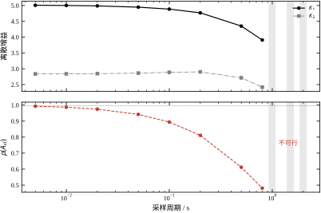
图 65-6 把表 65-6 画成上下两格。上格是 K_1、K_2 随 T_s 的变化（对数横轴），下格是 \rho 与 \sigma 的对比，右侧灰底是三个不可行点。下格里两条曲线离得越近，说明约束越紧：T_s=0.8 s 时 \rho=0.4813 与 \sigma=0.4868 只差 1.1%，几乎贴着边界；T_s=5 ms 时 \rho=0.9931 与 \sigma=0.9955 差 0.24%，看起来也近，但两者的绝对差只有 0.0024，对应的等效 \alpha 却高出 52%。看 \rho 与 \sigma 的绝对差会误导人，必须换算成 \alpha 才能比较。
最后补一个坑，它是本章第二次踩到的“退化”事故。最初的离散 LMI 没有写 \sigma，只写“X\succ0、A_dX-B_dY 的谱半径小于 1”：
\begin{bmatrix}X&A_dX-B_dY\\ (A_dX-B_dY)^{\mathsf T}&X\end{bmatrix}\succ0 \tag{65-33}
这个式子是对的（它是 \sigma=1 的特例），但它的可行域包含“\rho 无限接近 1”的解。求解器没有理由往中间走，于是所有 T_s 都给出 K\approx[3.01,\,1.74]、\rho\approx1.0000——和连续域 \alpha=0 那套一模一样，因为 \sigma=1 时问题退化成“只要求能稳”，而最小增益解恰好就是连续域那个。
这个现象说明：离散 LMI 里的 \sigma 不是可选项。 没有它，问题仍然是一个合法的凸问题，仍然返回 optimal，但它回答的是“能不能稳”，而你问的是“多快能稳”。两者的差别在 T_s 大的时候是致命的：\rho=1.0000 意味着时间常数无穷大，与 \rho=0.48 完全是两个世界。
前面两节把三套增益的“能不能用”说清了，这一节回答“到底有多好”，以及一个更微妙的问题：LMI 证书上的性能指标，和闭环实际表现出来的性能，是不是一回事。
日常说“这个回路稳”，可能指三件不同的事：
第一种，渐近稳定。 所有极点在左半平面，扰动后能回到平衡点。这是最弱的，也是 §65.4 里 \alpha=0 那套增益唯一保证的东西。它允许极点落在 -0.007，也允许时间常数 154 s。
第二种，指数稳定（带衰减率）。 存在 \alpha>0 使 \|x(t)\|\le Ce^{-\alpha t}\|x(0)\|。这是 \alpha>0 的设计保证的，\alpha 就是那个指数。注意它管的是“最坏方向”的衰减速度，不是“平均速度”。
第三种，二次稳定。 存在一个固定的二次型 V(x)=x^{\mathsf T}Px，使 \dot V<0 对参数区间里的每个 a 都成立。这是 LMI 直接给出的东西，它比前两种都强：二次稳定一定指数稳定（\alpha 由 P 和 A 决定），但指数稳定不一定二次稳定。
三者的关系可以用一句工程话概括：渐近稳定回答“会不会散架”，指数稳定回答“多久能收住”，二次稳定回答“我能不能用同一个能量函数证明它”。 前两个是系统的性质，第三个是证明的手段。LMI 的保守性，本质上就是把“系统的性质”换成了“证明的手段”——手段比性质窄，所以证明不出来的东西，未必不存在。
本章的算例正好能把这个“窄”量化。公共 Lyapunov 下最大 \alpha=0.9277；允许每个顶点一套 (X_i,Y_i) 时是 1.2207。后者也是二次稳定（只是 P 随顶点变），但已经不是“公共 P”意义上的二次稳定。而真实的系统，如果允许 P 连续地随 a 变，理论上还能更高。0.9277 不是系统的极限，是“公共二次 Lyapunov 函数”这个证明工具的极限。
图 65-10 把 \alpha=0 那套增益（K=[3.0113,\,1.7395]）放到 41 个参数点上，算了两个指标：最弱阻尼比 \zeta_{\min} 和最大极点实部 \max\mathrm{Re}\lambda。
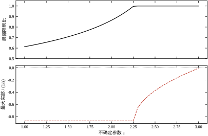
上格是阻尼比。它从 a=1 处的 0.6133 单调上升到 a\approx2.25 处的 1.0，然后平在 1.0。下格是最大实部，它在 a<2.25 时是常数 -0.8698，a>2.25 后突然折向上，到 a=3 时爬到 -0.0065。
两条曲线都在 a\approx2.25 处折了一下，这不是数值巧合，而是闭环特征方程的结构决定的。对二阶系统
\det(\lambda I-A+BK)=\lambda^2+K_2\lambda+(K_1-a)=0 \tag{65-34}
判别式是 K_2^2-4(K_1-a)。它为零的临界参数是
a^*=K_1-\frac{K_2^2}{4}=3.0113-\frac{1.7395^2}{4}=2.2548 \tag{65-35}
a<a^* 时判别式为负，两个共轭复根，实部恒为 -K_2/2=-0.8698，阻尼比随 a 增大而上升；a>a^* 时判别式为正，分裂成两个实根，慢的那个是
\lambda_{\text{slow}}=\frac{-K_2+\sqrt{K_2^2-4(K_1-a)}}{2} \tag{65-36}
它随 a 增大而单调右移，a=K_1 时正好到 0。本章的 a=3 离 K_1=3.0113 只有 0.0113，所以慢极点停在 -0.0065。
这段推导解释了一个容易误读的现象：上格在 a>2.25 后显示“阻尼比 1.0”，看起来性能最好，实际上那正是最危险的一段。 阻尼比的定义是 -\mathrm{Re}\lambda/|\lambda|，对实极点恒等于 1，无论这个实极点离虚轴多近。所以“\zeta=1”在过阻尼情况下不携带任何“快慢”信息，而工程上真正关心的恰恰是快慢。这也是为什么本节的第二个指标（最大实部）必须和阻尼比一起看：一个说“振不振”，一个说“慢不慢”，缺一个就会误判。
还要说清这张图证明了什么、没证明什么。41 个点上的逐点验算只能说明“这 41 个点没问题”，不能证明点与点之间没问题；真正把整个区间盖住的是顶点性（§65.2.5），网格只是它的实证。两者的地位完全不同：一旦顶点性不成立（比如 K 随 a 变、或约束对 A 非凸），这张图就从“验证”降级成“抽样”，而抽样永远可能漏掉最坏点。工程上最常见的错误就是把抽样当证明——图很漂亮，结论却是错的。
把极点和常见的时域指标对上，才能判断一个 LMI 设计“够不够用”。对二阶主导的系统，有三条近似关系：
t_s\approx\frac{4.6}{\alpha},\qquad M_p\approx e^{-\pi\zeta/\sqrt{1-\zeta^2}},\qquad \omega_n\approx\frac{\alpha}{\zeta} \tag{65-37}
第一式把衰减率和调节时间直接连起来：\alpha=0.9277 对应 t_s\approx4.96 s。表 65-4 里 \alpha=0.928 那套在 a=2 时实测 1.98 s，比 4.96 s 快得多——因为 4.6/\alpha 是最坏方向的估计（按最慢极点算），而实际响应的主导模态可能比最慢极点快。a=2 时两个极点都在 -1.45 附近，\alpha 的实际值是 1.45，对应 t_s=3.17 s，仍比 1.98 s 保守。这说明式 (65-37) 只能当量级估计，不能当精确预测。
第二式是超调与阻尼比的经典关系：\zeta=0.613 给出 M_p=8.7\%，\zeta=0.715 给出 4.0%，\zeta=0.996 给出 \approx0。表 65-4 里 \alpha=0 那套在 a=1 时 \zeta=0.613 但实测超调 0.0%——因为前馈不匹配导致稳态只到 0.503，峰值根本没超过 1。超调公式假设稳态是 1，一旦有静差，公式就失效。 这也是 §65.4.6 那笔账的另一个侧面。
第三式说明：同样的 \alpha，\zeta 越小则 \omega_n 越大。\alpha=0.928、\zeta=0.715 时 \omega_n=1.30 rad/s；\zeta=0.996 时 \omega_n=0.93 rad/s。前者更快但更振荡，后者更慢但更平——两者在 \alpha 这个指标下是等价的，这正是指标选择的难点。
现在可以回答“为鲁棒性付了多少钱”这个问题。有三把尺子：
尺子一，与标称 LQR 比。 标称 LQR 在 a=2 处的慢极点是 -1.176，即 \alpha_{\text{LQR}}=1.176。公共 LMI 的 \alpha=0.9277，是它的 79%。也就是为了覆盖 a\in[1,3]，牺牲了 21% 的标称响应速度。
尺子二，与顶点独立比。 1.2207 对 0.9277，公共设计只有调度设计的 76%。这 24% 是“不知道 a”的价格。
尺子三，与“每个 a 各自最优”比。 表 65-2 里三个点各自的 LQR 慢极点分别是 1.000、1.176、1.414，取最小值 1.000 作为“全区间都能达到”的上界（其实达不到，因为一套 K 管不住三个点）。公共设计的 0.9277 是这个上界的 93%。这个数看起来不错，但它是个虚假的乐观：1.000 是三个点各自最优里的最小值，不是某一套 K 能同时达到的值。
三把尺子给出 79%、76%、93% 三个数，选哪个取决于你想说服谁。给项目经理解释“为什么要多花 12% 的控制量”，用第一把；给同行解释“LMI 保守不保守”，用第二把；写论文时千万别用第三把，它是三个不同 K 的拼盘。
把这三个百分比换成秒，往往更容易被非控制专业的人接受。用式 (65-37) 的量级估计 t_s\approx4.6/\alpha：标称 LQR 是 4.6/1.176=3.91 s，公共 LMI 是 4.6/0.9277=4.96 s，多出 1.05 s。注意这个增幅是 27%，比 \alpha 的降幅 21% 大——因为 \alpha 与 t_s 成反比，\alpha 掉 21% 意味着 t_s 涨 1/0.79-1=27\%。同一个事实，写在分母上和写在分子上不是一回事，报告里选错一个，说服力就差三成。
再换一个角度：这 1.05 s 值不值，取决于指标卡在哪里。如果验收条件写的是“8 s 内进入 5% 带”，两套设计都满足，这 21% 一分钱不值；如果指标是“4 s 内”，两套都不满足，得在 \alpha 之外另想办法；只有指标落在 4 s 到 5 s 之间，这 21% 才是必须付的价钱。鲁棒性的价格不是由控制器决定的，是由指标决定的。 这也解释了为什么表 65-4 那张九种组合的表里没有“最优”一列——最优是相对于指标说的，脱离指标谈优劣没有意义。
最后说一件在纸面上看不出来、在现场一定会发生的事。
表 65-4 里 \alpha=0.928 那套增益在 a=3 时，|u|_{\max}=4.416，而物理限幅是 1。也就是说，阶跃一开始，执行器就饱和到 4.4 倍。线性分析给出的 47.2% 超调和 8.00 s 调节时间，全部是在“执行器能给出 4.4”这个假设下算出来的。真实设备给出 1，闭环的行为就完全不同：饱和期间相当于开环（u 恒定），不稳定的对象会在这段时间里快速偏离，等退出饱和时状态可能已经到了一个线性分析从未考虑过的地方。
这不是 LMI 特有的问题，所有线性设计都有。但 LMI 有两个地方让它更容易发生：
一是衰减率指标本身会推高增益。 要让 \alpha 大，就得把极点推远，而推远极点必然需要更大的控制量。\alpha 从 0 提到 0.928，增益范数从 3.48 涨到 5.88，|u|_{\max} 从 1.011 涨到 4.416——涨了 4.4 倍，而 \alpha 只涨了不到 1。
二是 LMI 的多解性让人容易忽略这件事。 同一个 \alpha，可以有很多个可行的 K，它们的 |u|_{\max} 可能差好几倍。求解器按 \min\|Y\| 选了一个，但这个“最小”是在 X\succeq I 归一化下的最小，不等于“控制量最小”。
补救的办法是在 LMI 里直接加控制量约束。最常用的是不变椭圆（§65.9 会给出完整形式）：给定 |x_1|\le1、|u|\le1，求一个椭圆，使椭圆内所有初始状态在收敛过程中都不越界。本章实测：\alpha=0 的增益对应面积 1.1896 的椭圆，\alpha=0.928 的只有 0.6146——增益翻倍，可用吸引域面积减半。这个数比任何定性描述都直白：你想要的响应速度，是从吸引域里“买”来的。
所以一个完整的设计流程，在 §65.3 那五步之后还应该加一步：用不变椭圆核一遍吸引域，确认它覆盖现场会遇到的最大初始偏差。 如果覆盖不了，要么降 \alpha，要么加前馈或分段控制——但那是另一章的内容了。
LMI 的决策变量有五个：X、Y、\alpha、\varepsilon、\gamma，再加上一个人为设的 \kappa。它们都不是“调参旋钮”意义上的参数，每一个都有明确的数学角色，但它们在工程上的可解释性差别很大。这一节逐个说清：这个量是什么、量纲是什么、改它会发生什么。
最容易出错的一个概念。Lyapunov 函数是 V(x)=x^{\mathsf T}Px，而 LMI 里的决策变量是 X=P^{-1}。两者互为逆，性质完全不同：
| 量 | 定义 | 特征值的意义 | 本章实测 |
|---|---|---|---|
| P | V=x^{\mathsf T}Px | 能量等高面的“陡度” | 未直接求出 |
| X | X=P^{-1} | V\le1 椭圆的半轴平方 | 半轴 0.2876、1.3168 |
表 65-7 P 与 X 的关系
X 的特征值 \mu_i 满足：V(x)\le1 定义的椭圆，在第 i 个主方向上的半轴长度是 \sqrt{\mu_i}。这个几何解释是理解 X 的全部关键：
所以式 (65-11) 那个 X\succeq I 的归一化，几何上就是“椭圆的每个半轴都不短于 1”。这条约束把一个本来可以任意缩放的椭圆钉住了大小，代价是它可能和真实的吸引域不匹配——如果真实吸引域只有 0.3 m，那 X\succeq I 就是过度要求，会人为抬高增益。
Y=KX，所以 Y 的量纲是“增益 × 尺度”。它不能直接读成增益，必须除以 X 之后才是 K。这带来两个后果。
第一，Y 的大小不能用来判断“控制激不激进”。 本章 \alpha=0 那套的 Y 范数比 \alpha=0.928 那套小，但这只是因为前者的 X 更接近 I。真正该看的是 K=YX^{-1} 的范数：3.48 对 5.88。
第二，\min\|Y\|_F 这个目标有偏。 它实际最小化的是 \|KX\|_F，在 X\succeq I 的边界上（X=I）退化成 \|K\|_F，但在 X 内部时它会倾向于“让 X 小一点、K 小一点”的组合。本章因为 X 顶在 I 上，这个问题不明显；换成 X\succeq0.01I 这种松约束，\min\|Y\| 就可能给出一个 K 很大、X 很小的解。要避免，就得把目标写成 \min\|K\|（非凸），或者加式 (65-12) 那样的增益界。
\alpha 是唯一一个能直接对应到工程指标的决策变量：\alpha 越大，响应越快，同时增益越大、吸引域越小。本章的实测把这条权衡量化了：
| \alpha | K_1 | K_2 | \|K\| | a=3 时 \|u\|_{\max} | 椭圆面积 |
|---|---|---|---|---|---|
| 0 | 3.0113 | 1.7395 | 3.48 | 12.707 | 1.1896 |
| 0.928 | 5.1188 | 2.9007 | 5.88 | 4.416 | 0.6146 |
表 65-8 \alpha 对增益、控制量与吸引域的影响
这张表有一个反直觉的地方：\alpha 从 0 提到 0.928，a=3 时的 |u|_{\max} 反而从 12.707 降到 4.416。原因不是 \alpha 让控制变温柔，而是 \alpha=0 那套在 a=3 时根本不受控（慢极点 154 s），状态一路爬到 4.2，控制量自然跟着涨。这个对比说明：“控制量大小”本身不能脱离“响应是否正常”来评价，一个失控的回路可能给出很大或很小的控制量，两者都没有意义。
\alpha 的可行上限是 0.9277（公共设计）。这个上限不是一个“建议值”，是硬边界：二分到最后，\alpha=0.9277 可行、0.9287 不可行，中间没有过渡带。工程上取 0.8–0.9 倍的上限比较稳，留一点数值余量。
\varepsilon 只在范数有界表述里出现，它的作用是平衡式 (65-21) 里的两项：\varepsilon DD^{\mathsf T} 和 \varepsilon^{-1}(EX)^{\mathsf T}(EX)。\varepsilon 大，前者重、后者轻；\varepsilon 小则相反。
本章实测的最优值是 4.7299。这个数本身没有物理意义，但它的量级有信息：如果 \varepsilon 跑到 10^{-6} 或 10^{6}，说明两项的量级严重失衡，通常意味着 D 或 E 的标度选错了（比如把 10^3 量级的系数塞进 E）。这时候应该先做归一化，而不是让求解器去扛。
还有一点：\varepsilon 是优化出来的，不是给定的。很多人习惯手填一个 \varepsilon 然后扫描，那是把凸问题变成了非凸搜索。正确的做法是让它和 X、Y 一起作为决策变量，交给求解器。
\gamma 是 \|T_{zw}\|_\infty 的上界。本章多胞 LMI 给出 9.1759，而真值是 1.9506。这个 4.7 倍的差距要理解成“证书的精度”，不是“设计的精度”——设计本身可能不错，只是证书说不清它有多好。
\gamma 的可行下界由 D_{12} 决定（本章 \|D_{12}\|=1），这是硬下界，任何 LMI 都不可能给出比它更小的 \gamma。加上增益界 \kappa=20 之后，实际能做到 9.1759。如果把 \kappa 放大到 10^3，\gamma 会降下来，但对应的 K 会变成不可实现的量级——这就是 §65.1.4 那个事故。
读 \gamma 的正确方式：不要问“\gamma 是不是足够小”，要问“\gamma 对应的闭环在真值网格上表现如何”。本章的做法是先解 LMI 拿 K，再用 4000 频点 × 241 参数点算真值，得到 1.9506。如果真值满足指标，\gamma=9.18 这个“难看”的证书就可以接受；如果真值不满足，\gamma 再小也没用。
\kappa 不是 LMI 的一部分，是建模者加的。它没有理论依据，只有工程依据：标称增益的 3–5 倍。本章取 20，标称增益范数 5.24，比值 3.8。
\kappa 太小的后果是“把好解切掉”：可行域被人为缩小，\gamma 被抬高，甚至直接不可行。\kappa 太大的后果是“退化解回来”：\gamma 被无穷大增益买到理论下界。两者之间有一个窗口，本章的 20 在窗口内。判断窗口位置的办法很简单：把 \kappa 从 5 扫到 100，看 \gamma 和 \|K\| 怎么变。如果 \gamma 随 \kappa 单调下降而 \|K\| 单调上升到 \kappa 附近，说明还在窗口外（右侧）；如果 \gamma 不变而 \|K\| 不变，说明 \kappa 已经不起作用（左侧）。
把所有抽象的量落到一张图上，就是不变椭圆。
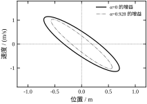
椭圆的定义是
\mathcal{E}=\{x:\ x^{\mathsf T}X^{-1}x\le1\} \tag{65-38}
对任意 x(0)\in\mathcal{E}，只要 A_{cl}X+XA_{cl}^{\mathsf T}\prec0 对所有顶点成立，就有 x(t)\in\mathcal{E} 对所有 t\ge0 成立。再加上两条附加约束
X_{11}\le x_{1,\max}^2,\qquad KXK^{\mathsf T}\le u_{\max}^2 \tag{65-39}
就能保证椭圆内的状态永不越过行程限制、控制量永不越限。式 (65-39) 的第二条来自 (Kx)^2\le\max_{x\in\mathcal{E}}(Kx)^2=KXK^{\mathsf T}，是一个标准的二次型极值。
本章的实测：\alpha=0 的增益对应半轴 [0.2876,\,1.3168]、面积 1.1896；\alpha=0.928 的对应半轴 [0.1675,\,1.1679]、面积 0.6146。
读这两个椭圆要注意三件事。
第一，真正卡住椭圆的是控制量约束，不是行程。 把两套增益分别代回式 (65-39)：KXK^{\mathsf T} 两次都等于 1.0000（顶在边界上），而 X_{11} 只有 0.4967 和 0.3246，离 x_{1,\max}^2=1 还差一半。也就是说，椭圆是被推力限死的，导轨行程还有富余。椭圆在 x_1 方向的最大延伸是 \sqrt{X_{11}}=0.705 m，只有行程的 70%。这个信息在现场很值钱：它说明限制性能的是执行器，改造方向应该是加大推力而不是加长导轨。
第二，椭圆是斜的，长短轴比 4.58。 半轴 [0.2876,\,1.3168] 对应的特征向量分别是 (0.866,\,0.501) 和 (0.501,\,0.866)，也就是主轴相对坐标轴整体转了 30^\circ。倾斜来自 X_{12}=-0.7157——这个交叉项与两个对角元同量级，说明位置与速度在 Lyapunov 函数里强负相关。短轴方向大致是“位置偏右、速度也向右”，误差会继续累积，所以这个方向最危险，椭圆必须收窄；长轴方向以速度偏差为主，靠加速度可以很快修正，可以放宽。
第三，\alpha 从 0 提到 0.928，椭圆面积缩了 48%。 短半轴缩了 42%（0.2876→0.1675），长半轴只缩了 11%（1.3168→1.1679），X_{11} 缩了 35%，倾斜角基本不变（特征向量从 0.866/0.501 变到 0.882/0.471）。缩得最多的正是原来最紧的那个方向——这符合“约束越紧、提高性能的代价越大”的一般规律。有意思的是控制量约束在两种情况下都顶在边界上（1.0000），说明不管 \alpha 取多少，推力都是那个瓶颈；提高 \alpha 只是让同样的推力对应一个更小的椭圆。
第四，椭圆是线性模型的产物，它的边界不是设备的边界。 式 (65-38) 的推导全程用的是 \dot x=A(a)x+Bu，而这个方程只在平衡点附近成立。以磁悬浮为例，气隙偏离平衡点 30% 时，电磁力与气隙近似平方反比，线性模型已经明显低估了恢复力，也高估了控制权限。椭圆的半轴 1.3168 m 是“位置跑出 1.3 m”这种物理上不可能出现的情形，它之所以出现，是因为 LMI 只认矩阵、不认行程——真实可用域被 X_{11}\le1 截在 0.705 m，而这个 0.705 m 本身还要再乘一个“线性化仍然有效”的折扣。看到椭圆面积，先问一句：这个范围里模型还成立吗？
这四件事合起来，才是对 X 的完整解读：它是椭圆的矩阵，是被推力限死的形状，是 \alpha 的代价，也是线性化假设的边界。只看第一条，会把 LMI 当成一个画椭圆的工具；四条一起看，才知道椭圆的边界在哪里失效、为什么会失效。
| 符号 | 是什么 | 量纲 | 怎么定 | 改大的后果 |
|---|---|---|---|---|
| X | P^{-1}，椭圆矩阵 | 状态^{-2} | 求解 | 椭圆大、增益小 |
| Y | KX | 控制/状态 | 求解 | 增益大 |
| \alpha | 衰减率 | 1/s | 二分或给定 | 快、增益大、域小 |
| \varepsilon | S-procedure 配重 | 无量纲 | 求解 | 偏向 DD^{\mathsf T} 项 |
| \gamma | H∞ 上界 | 无量纲 | 二分 | 证书松、增益小 |
| \kappa | 增益界 | 控制/状态 | 人为 | 可行域大、可能退化 |
表 65-9 六个量的速查
这张表最该记住的是最后一列：每个量“改大”的后果都不一样，而且大多不是单调的好或坏。 \alpha 大是好事（快），但增益和吸引域跟着变差；\kappa 大是“松绑”，但松到一定程度解就退化了；X 大是“域大”，但增益被压小、响应变慢。所谓“调参”，在 LMI 里其实是“在这些互相拉扯的量之间选一个你愿意接受的组合”，而不是找一个最优值。
LMI 里的“调参”和 PID 里的调参完全是两件事。PID 调的是三个增益，试错的对象是波形；LMI 调的是模型、约束和求解器设置，试错的对象是“可行/不可行”和“证书的质量”。这一节讲三件事：\alpha 为什么要二分、求解器怎么选、不可行的时候怎么定位。
式 (65-10) 里把 \alpha 当决策变量写出来是
\max\ \alpha\quad\text{s.t.}\quad AX+XA^{\mathsf T}-BY-Y^{\mathsf T}B^{\mathsf T}+2\alpha X\preceq0 \tag{65-40}
问题在于 2\alpha X 这一项是两个决策变量的乘积（\alpha 是标量变量、X 是矩阵变量）。cvxpy 的 DCP 规则会直接拒绝这种写法，报“DCPError: Problem does not follow DCP rules”。这不是软件缺陷，而是这个问题本身就不是凸的——虽然它的可行域（对固定的 \alpha）是凸的，但“\alpha 与 X 同时变”不是。
标准的做法是外层二分：固定 \alpha 判可行，可行就往上抬，不可行就往下压。本章用 16 次二分（精度 10^{-3}，区间 [0,20]）找到 0.9277。每次求解约 6 ms，整个二分不到 100 ms。
二分的前提是可行性对 \alpha 单调：\alpha 变大时可行域只会缩小。这一点在本章成立（衰减率要求越严越难满足），所以二分有效。如果某个问题不满足单调性，二分就会漏掉可行区间，那时候需要用广义特征值方法或者直接扫描。
还有一个小技巧：如果只想知道“能不能达到某个 \alpha”，那就不需要二分，直接给定 \alpha 判可行即可。工程上多数时候是这样——指标是给定的（比如“要 0.8 以上”），不是要极值。
图 65-7 是四个求解器在同一道 LMI（\alpha=0.9 的公共设计）上的实测。
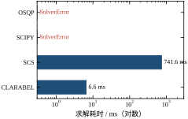
| 求解器 | 状态 | 耗时 / ms | 能否用于 SDP |
|---|---|---|---|
| CLARABEL | optimal | 6.15 | 能 |
| SCS | optimal_inaccurate | 751.23 | 能 |
| SCIPY | SolverError | — | 不能（只做 LP） |
| OSQP | SolverError | — | 不能（只做 QP） |
表 65-10 四个求解器的实测对比
四个结果各有各的教训。
CLARABEL 是默认选择。 它是内点法，对本章这种 2\times2 到 3\times3 的小规模 SDP 极快，6 ms 出结果，状态干净。
SCS 能用，但慢 122 倍，而且不精确。 它是一阶方法（ADMM），每步只做矩阵投影，收敛速度依赖条件数。本章的 LMI 条件数不算差，它仍要 751 ms，且状态是 optimal_inaccurate——解在可行性边界附近，残差需要额外核验。SCS 的价值在于大规模问题（变量上万）时内存占用小，本章这种小问题用它纯属浪费。
SCIPY 和 OSQP 直接报错，这不是它们的问题。 scipy.optimize.linprog 只解线性规划，OSQP 只解二次规划，两者都不支持半定约束。把它们写进候选列表，是为了说明一件事：“凸优化求解器”不等于“能解 LMI 的求解器”，选型时第一件事是确认它支持锥规划。
图 65-7 用对数横轴画耗时，CLARABEL 的柱子几乎贴着左边界，SCS 的柱子在右侧，两个数量级的差距一目了然。图上 SCIPY 和 OSQP 两根柱子是红色的短条，标注的是异常类型，不是耗时。
122 倍这个数字本身，不如它的构成重要。CLARABEL 的 6.15 ms 里，建模与编译占了一小半，真正的内点迭代只有个位数次——小规模 SDP 的内点法迭代次数对变量数不敏感，本章的未知量只有 X 的 3 个自由元加 Y 的 2 个，几次迭代就收敛。SCS 的 751 ms 则是几百到上千次 ADMM 迭代累积起来的：每次迭代只做矩阵投影与投影梯度，单步便宜但步数多。一阶法与内点法的交叉点通常在变量数几千的位置：低于它，内点法“步数少”的优势压倒一阶法“单步便宜”的优势；高于它，内点法的矩阵分解代价反过来压死自己。
这条经验可以直接当自查手段用：如果你的问题只有两三个状态，却要上百毫秒才能解出来，先怀疑建模，别急着换求解器。常见的三种建模浪费是：用 cp.bmat 拼了一个本来稀疏的大矩阵、把同一条约束在循环里重复声明了多次、以及把参数当变量（比如手写 \varepsilon 的网格搜索，等于把一次求解变成几十次）。本章二阶问题的单次求解普遍在 6–10 ms；唯一的例外是三阶滞后那组（表 65-19，\mathrm{cond}(X) 到 10^{6}），那组一共 1091 ms、约一百次求解，单次明显比二阶贵，贵在条件数，不贵在求解器。
参数不多，但设错会浪费时间。三个最常用的：
max_iters：最大迭代次数。默认值通常够用，但如果问题接近不可行，求解器会在边界附近来回磨，这时候要么放大 max_iters，要么接受 optimal_inaccurate 并自己核残差。本章的 16 次二分里没有一次撞到迭代上限，说明问题规模小、良态。
eps_abs / eps_rel：绝对/相对精度（SCS 用这两个）。默认 10^{-4} 左右，对控制设计够用；要更高精度（比如 10^{-6}）耗时大约翻倍，而解出来的 K 变化在第 4 位有效数字之后——没有工程意义。
feastol：可行性容差（CLARABEL 用）。默认 10^{-8}，本章的残差检查就按这个量级定阈值。
一个实用建议：先用默认参数跑通，再考虑调。 大多数“求解失败”不是参数问题，是模型问题（漏了归一化、约束写错、量纲差几个数量级）。调参数只在模型确认无误之后才有意义。
infeasible 是 LMI 里最常见的失败，也是最难定位的。它不像程序错误有堆栈，只告诉你“这组约束无解”。本章的离散 LMI 在 T_s\ge1.0 时就遇到这个情况，定位过程可以作为一个模板：
第一步，降维检查。 把约束一条条去掉，看哪一条去掉之后变可行。本章的离散问题在 T_s=1.0 s 处不可行，去掉 \sigma（令 \sigma=1）之后变可行，说明卡住它的是衰减率要求而不是物理限制；而 T_s=1.5 s 去掉 \sigma 后仍不可行，说明那一段是真正的“怎么调都稳不住”。
第二步，换表述。 公共 P 不可行，不代表问题无解。换成顶点独立（每个 a 一套 P）再试：如果可行，说明问题出在“公共 Lyapunov 函数”这个限制上，而不是系统本身不可镇。本章的连续设计就是这样：公共 \alpha 上限 0.9277，调度上限 1.2207，后者在 0.9277 以上仍然可行。
第三步，松约束。 把 \alpha 降到 0（只要求稳定）、把 \kappa 放大、把 X\succeq I 换成 X\succeq\epsilon I。如果这样可行，说明原问题是“要求太紧”，可以逐步收紧找到边界。本章求 \alpha 上限的二分就是这一步的系统化版本。
第四步，核数值。 如果松到极限还不可行，先怀疑量纲。把状态从米换成毫米、把控制量从 m/s^2 换成 g，重新跑一遍。量纲差 10^3 以上时，内点法的数值误差足以把“可行”判成“不可行”。
这四步的顺序不能乱：先排除“要求太紧”，再排除“表述太严”，最后才怀疑数值。反过来做，会在数值上浪费大量时间。
把这一节和前面几节的经验压成七条，按重要性排序：
optimal 的解。第 7 条值得多讲一句。工程上遇到 infeasible，第一反应往往是“改参数让它可行”，但正确的问题是“为什么不可行”。是要求太高（降 \alpha）、表述太严（换调度）、还是物理限制（换执行器）？这三种原因的应对完全不同，而 LMI 的不可行性恰好能把它们区分开——这也是为什么本章在 §65.5 花了一整节讲那个“不可行”。
LMI 的“优化”有两个方向：一是让求解更快（算法层，换求解器、改稀疏结构），二是让结果更好（建模层，降保守性）。前者的收益是毫秒级，后者的收益可能是 30% 的性能。这一节只讲后者，并且用本章的实测把“保守性”拆成三笔可以分别计价的账。
一个 LMI 设计给出的指标（\alpha 或 \gamma）比“真实可达”差，原因不外三处：
第一笔，Lyapunov 函数的形状。 LMI 只认二次型 V=x^{\mathsf T}Px。真实的系统可能用一个非二次的 V（比如分段二次、多项式）证明出更好的衰减率。这笔账在单点时为零（Lyapunov 定理是充要的），在多参数时为正。
第二笔，P 的参数依赖性。 用一个公共 P 管住整个参数区间，比每个 a 一个 P(a) 严格。这笔账就是“不知道 a”的价格，可以用“公共设计”和“调度设计”的差来量。
第三笔，人为约束。 \kappa、X\succeq I、把整个频段的 \gamma 用一个数覆盖，这些都是建模者加的，不是问题本身的要求。它们带来的保守性最容易被忽略，因为它们看起来“只是一个数值”。
三笔账里，第一笔最难降（要换数学工具），第二笔有成熟的降法（参数依赖 V、多胞细化），第三笔只需要意识到它存在。本章的实测正好把三笔都量了一遍，而且结果有点出乎意料：第三笔最大。
图 65-5 是本章 H∞ 部分的核心数据。
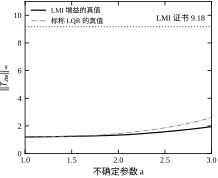
先看数字：
| 设计 | 证书 \gamma | 增益范数 | 网格真值 |
|---|---|---|---|
| 多胞 LMI（两个顶点） | 9.1759 | 6.173 | 1.9506 @ a=3 |
| 单顶点 LMI（只 a=1） | 1.1797 | 1.820 | — |
| 单顶点 LMI（只 a=3） | 8.6648 | 6.247 | — |
| 标称 LQR | — | 5.236 | 2.6176 @ a=3 |
表 65-11 H∞ 设计：证书、增益与真值
这张表有四层信息，一层比一层有用。
第一层：证书 9.1759，真值 1.9506，差 4.7 倍。 这是“充分条件”的直接代价。同一个 K，LMI 说“最坏情况不超过 9.18”，实际最坏只有 1.95。如果按证书做验收（“\gamma<10 就通过”），会通过一个其实很好的设计；如果按证书做优化（“把 \gamma 压到 5 以下”），会白费很多力气——因为 5 这个目标对应的真实性能可能只要 1.2 的增益就能达到。
第二层：多胞只比单顶点贵 5.9%。 单顶点 a=3 的证书是 8.6648，多胞是 9.1759，比值 1.059。也就是说，“用一个公共 P 管住两个顶点”这件事，只让 \gamma 涨了 5.9%。这和衰减率那边 32% 的差距形成鲜明对比——原因在第三笔账（增益界），下一小节讲。
第三层：几乎全部 \gamma 来自 a=3 那一端。 单顶点 a=1 只要 1.1797（接近理论下界 1），a=3 要 8.6648，差 7.3 倍。为什么？a=3 时负刚度最强，同样的扰动会激起更大的位置偏移，要压住它就得用更强的反馈，而强反馈又把控制量 u 送进被调输出 z，于是 \gamma 被“控制量通道”顶上去。这是一个结构性的矛盾：z 里包含 u，所以“用大 u 压小 x”这条路在 H∞ 指标下是自相矛盾的。
第四层：LMI 的 H∞ 设计确实比 LQR 好。 标称 LQR 增益的真值是 2.6176，LMI 增益是 1.9506，低 25%。也就是说，在“抗扰”这个指标上，LMI 用几乎相同的增益范数（6.17 对 5.24）换来了 25% 的改善。这部分收益是真实的，和证书的保守性无关。
图 65-5 把这两件事画在一起：一条水平虚线是证书 9.18，两条曲线是两个增益的真实范数。曲线在 a=1 附近都很低（1.2 左右），向 a=3 单调上升。这个形状说明“最坏在参数上界”是本算例的结构性事实，不是偶然。
这是本章写作过程中最意外的发现，也是必须诚实交代的一件事。
§65.1.5 说“公共设计 0.9277 比调度设计 1.2207 低 32%，这是不知道 a 的代价”。这个说法在 \kappa=6 的增益界下成立，但它把两笔账混在一起了。把 \kappa 换掉重跑，数字变了：
| 增益界 \kappa | 公共设计 \alpha | 调度设计 \alpha | 差距 | 公共设计的 \|K\| | 调度设计的 \|K\| |
|---|---|---|---|---|---|
| 6 | 0.9280 | 1.2207 | 31.5% | 5.884 | 4.251 / 5.991 |
| 20 | 1.6367 | 1.7609 | 7.6% | 9.740 | 7.802 / 9.567 |
| 无界 | 19.9997 | 19.9997 | 0 | 1199.9 | 1278.6 / 1280.6 |
表 65-12 增益界对“公共 vs 调度”差距的影响
三行的含义完全不同。
\kappa=6 那一行，公共设计的增益范数 5.884、调度设计第二个顶点的 5.991——两者都顶在 6 附近。也就是说，这个 \alpha 不是被 Lyapunov 结构限制的，是被增益界限制的。31.5% 的差距里，有多少是“信息差”、有多少是“两个设计分别撞到同一个天花板的不同位置”，从这个数里看不出来。
\kappa=20 那一行，两个设计的增益范数（9.74 对 9.57）都离 20 还有一倍空间，说明界不再起作用。这时候的 7.6% 才是“公共 P 对每点 P”的真实代价。它比 32% 小得多。
无界那一行，两个 \alpha 都顶在二分上限 19.9997，增益 K_1\approx1200。这再次验证了 §65.1.4 的结论：没有增益界，问题退化。
所以正确的说法是：“不知道 a”的代价是 7.6%，不是 32%；多出来的 24 个百分点是增益界造成的，属于第三笔账。 这个纠正在工程上很重要——如果按 32% 去说服别人“必须上调度”，那是虚报；按 7.6% 去说服，理由仍然成立，但量级完全不同。
顺带说，这个发现也解释了 §65.9.2 里“多胞只贵 5.9%”的现象：H∞ 那边的 \kappa 取的是 20，界不起作用，所以看到的是纯粹的“公共 P 代价”。两个数字（7.6% 与 5.9%）量级一致，互相印证。
第二笔账有一个很少被讲、但在工程上极好用的降法：分段公共 Lyapunov 函数。
思路很直接：把参数区间切成两段，[1,2] 用 P_1、[2,3] 用 P_2，但控制器 K 仍然共享。约束写成
A(a)X_j+X_jA(a)^{\mathsf T}-BY-Y^{\mathsf T}B^{\mathsf T}+2\alpha X_j\prec0, \quad a\in\{1,2\}\text{ 配 }X_1,\ \ a\in\{2,3\}\text{ 配 }X_2 \tag{65-41}
因为 A(a) 仿射，每段只需验两个端点，一共四条约束（a=2 那一点被两段共用）。K 只有一个，所以不需要在线测 a，投运后仍然是一个常值增益。
本章实测（\kappa=20）：
| 表述 | \alpha | K | 相对全公共 | 需要在线调度 |
|---|---|---|---|---|
| 全公共 P | 1.6367 | [8.875,\,4.013] | — | 否 |
| 分两段 P | 1.6992 | [7.939,\,3.775] | +3.8% | 否 |
| 每点独立 P | 1.7609 | 两套 | +7.6% | 是 |
表 65-13 分段 Lyapunov 的效果（\kappa=20）
分两段拿到了“公共 → 调度”这段差距的 50.3%（(1.6992-1.6367)/(1.7609-1.6367)），却不需要任何调度逻辑。这个性价比高得惊人，原因也简单：区间中点 a=2 附近，公共 P 必须同时迁就两端，而分段之后每段只需管半段，代价自然小。
代价是什么？K 仍然只有一个，所以闭环在 a=2 处必须同时满足 X_1 和 X_2 两套约束，这是分段的“接缝成本”。切得越细，接缝越多，收益会饱和。理论上切到无穷多段就退化成调度设计，但实际上切到 4 段之后收益就很有限了，而 LMI 规模线性增长。
这个手段在文献里叫“分段二次 Lyapunov 函数”或“多胞细化”，通常和“参数依赖 Lyapunov 函数”（P(a) 在顶点间线性插值）一起讨论。两者的区别是：参数依赖 V 需要 P(a) 连续变化，往往要配调度；分段 P 允许跳变，可以配常值 K。工程上后者更容易落地。
把常见的手段列全，各自标上“降哪笔账、代价是什么”：
| 手段 | 降哪笔账 | 本章实测收益 | 代价 |
|---|---|---|---|
| 分段 / 参数依赖 P | 第二笔 | \alpha +3.8%（两段） | LMI 规模 × 段数 |
| 松弛变量（dilated LMI） | 第一、二笔 | 未测（文献报 5–15%） | 变量数翻倍 |
| 放宽 \kappa | 第三笔 | \alpha +76%（0.93→1.64） | 增益变大，可能不可实现 |
| 全块 S-procedure | 第一笔（多参数时） | 单参数时无损 | 结构复杂，易写错 |
表 65-14 四种降保守手段
松弛变量值得多说一句，因为它的思路和前面所有方法都不同。标准 LMI 里 X 同时扮演两个角色：Lyapunov 矩阵、以及 K=YX^{-1} 里的尺度。松弛变量把这两个角色拆开，引入一个额外的矩阵 G，把约束写成
\begin{bmatrix}A G+G^{\mathsf T}A^{\mathsf T}-BY-Y^{\mathsf T}B^{\mathsf T}&X-G^{\mathsf T}\\ X-G& -X\end{bmatrix}\prec0 \tag{65-42}
的形式（不同的“松弛”写法略有差别，这里给的是最常见的一种）。好处是 X 和 G 不必相等，可行域变大；代价是变量从 2\times2+1\times2 变成两个 2\times2 加一个 1\times2，规模翻倍。对本章这种二维问题，这点规模无所谓；对几十维的问题，翻倍就是几秒和几分钟的差别。
本章没有采用松弛变量，原因不是它无效，而是没有测过它的收益，就不该报告它的收益。表 65-14 那一栏写的是“未测（文献报 5–15%）”，这是有意的：本章所有数字都来自 ch065_sim.py 的实际运行，文献值只能当参考，不能混进账本。要补这个实验，做法是把式 (65-42) 与式 (65-8) 并排跑同一个 \alpha 二分，比较两个上限；变量从 5 个涨到 9 个左右，对二维问题耗时仍是个位数毫秒，代价完全可以接受。
更值得记住的是：松弛变量的收益随问题规模增长。它放松的是“X 同时承担 Lyapunov 矩阵与尺度两个角色”这个结构性限制，而这个限制在小问题上往往不紧——本章的 X 顶在 I 上，本来就没有多少自由度可放。所以文献里 5–15% 的收益，多半来自十几维以上的对象；把那个数字直接搬到二阶问题上，很可能高估。
全块 S-procedure 只在对多个不确定参数时才有意义。本章只有一个 \delta，S-procedure 是无损的（§65.2.4 已经验证），所以没有收益。换成三个独立参数，无损性消失，全块 S-procedure 能把这部分找回来一部分。
最后把这一节的所有数字汇总成一张账本，方便对照：
| 对比 | 数字 | 归因 |
|---|---|---|
| 公共 \alpha vs 调度 \alpha（\kappa=6） | 0.928 vs 1.2207（−24%） | 第二 + 第三笔 |
| 公共 \alpha vs 调度 \alpha（\kappa=20） | 1.6367 vs 1.7609（−7.0%） | 纯第二笔 |
| 分两段 P vs 全公共（\kappa=20） | 1.6992 vs 1.6367（+3.8%） | 第二笔降了一半 |
| H∞ 多胞 vs 单顶点 a=3 | 9.1759 vs 8.6648（+5.9%） | 纯第二笔 |
| H∞ 证书 vs 真值 | 9.1759 vs 1.9506（×4.7） | 第一笔（BRL + 二次 V） |
| \alpha 无界 vs \kappa=20 | 19.9997 vs 1.6367 | 第三笔（界必须存在） |
表 65-15 保守性的账本
这张账本最该记的是最后一行：“不设界的 LMI 没有最优解”。这一点在数学上是常识（齐次性），但在工程上经常被忘掉——很多论文报告一个很大的 \alpha 或很小的 \gamma，如果没写清楚增益界和归一化，那个数就没有意义。本章从 §65.1.4 到 §65.9.3 反复回到这件事，原因就在这里。
还有一行值得注意：H∞ 的第一笔账是 4.7 倍，是所有账里最大的一笔。它降不下来（除非换非二次 V），所以工程上对 H∞ 的 \gamma 值应该有一个心理预期：它通常是真值的 2–5 倍。把这个数当“设计指标”是错的，当“相对比较的标尺”是对的——两个设计的 \gamma 相差 20%，通常意味着真实的抗扰能力也差 20% 左右，即使两者的绝对值都偏高。
账本还有一种用法：判断“该不该继续在这个框架里调”。 如果主导的那笔账恰好没有可用的降法（比如第一笔最大，而换非二次 Lyapunov 的规模成本接受不了），那问题就不在参数上，而在“用 LMI 处理这类对象”这个选择上。§65.11.3 那五条判据，本质上就是把这张账本倒过来读：哪笔账注定最大，就说明这条路走不通。
前九节都在“数学成立”这一层：LMI 有解、解出来是 K、K 满足要求。这一节换一个层面问：把同一套流程装进真实设备，会在哪里先坏。 坏的地方按出现频率排三类——数值（求解器说 optimal，解却不能用）、单位（量纲换一换，结论跟着变）、阶数（把快模态当“可忽略”，代价有多大）。前两类是“同一个 LMI 的不同写法”，第三类是“同一台机器的不同模型”。
先说一个容易被忽略的事实：SDP 求解器返回的 X、Y 并不精确满足约束，残差总在 10^{-9} 到 10^{-6} 这个量级。把 §65.1.4 那套公共 Lyapunov 设计（\kappa=6、\min\|Y\|_F）的解代回式 (65-8)，在不同 \alpha 下算左边矩阵的最大特征值：
| \alpha | 两顶点中最差的 \lambda_{\max} | K | 判断 |
|---|---|---|---|
| 0 | -9.5\times10^{-9} | [3.0113,\ 1.7395] | 负，可行 |
| 0.5 | +2.9\times10^{-9} | [3.9593,\ 2.2486] | 正，但只有 10^{-9} |
| 0.9 | +1.5\times10^{-10} | [5.0164,\ 2.8356] | 正，更小 |
| 0.92 | -6.9\times10^{-11} | [5.0898,\ 2.8827] | 负 |
| 0.927 | +4.2\times10^{-10} | [5.1160,\ 2.8990] | 正 |
| 0.9277 | +1.9\times10^{-9} | [5.1187,\ 2.9006] | 正，且已在 \alpha 上限上 |
表 65-16 回代残差：\alpha 越大，符号越不可靠
这张表最值得看的是符号在正负之间来回跳。同一个求解器、同一套建模代码、同一个参数扫描，\lambda_{\max} 一会儿是 -10^{-10}、一会儿是 +10^{-9}。如果拿“\lambda_{\max}<0”当可行性判据，那么在接近 \alpha 上限时，判据的回答完全由数值噪声决定。正确做法是带容差判：只要 |\lambda_{\max}|\le10^{-6}，就认为该约束“在数值精度内成立”；真正的可行性由 \alpha 二分（§65.4）来确定，而不是由单次求解的残差符号。
第二条约束也有同样的现象。\alpha=0.9277 时，\min\mathrm{eig}(X-I)=-7.5\times10^{-10}，也就是归一化约束被违反了 10^{-10}；\kappa=20 时类似。这些不是 bug，是内点法收敛到边界的必然结果——最优点本来就落在约束边界上（\min\mathrm{eig}(X)=1.0000，精确压在 I 上），任何数值方法都会在边界两侧各偏一点。
降精度时要小心。 把 X、Y 转成 float32 再代回，\lambda_{\max} 变成 -1.8\times10^{-6}（a=1）和 -7.2\times10^{-7}（a=3）——仍然是负的，说明这套解可以在单精度下使用。但余量只剩一个数量级。如果状态量纲差得多（比如位置 10^{-3} m、速度 10^{3} m/s），残差会同比放大，单精度就不再够。工程上的规矩很简单：LMI 的设计阶段用双精度，复核也用双精度，只有最后生成增益表时才允许降到定点。
阶数一升，条件数就爆。 本章二阶问题的 \mathrm{cond}(X) 只有 10.6（\alpha=0.9277）到 21.0（\alpha=0），很健康。把执行器滞后加进来变成三阶（§65.10.3），\mathrm{cond}(X) 立刻升到 1.5\times10^{3} 至 3.9\times10^{6} 之间。这个跳变不是“多了一阶”造成的，是三阶模型里时间常数差了三个数量级（滞后 0.005 s 与对象 1 s）造成的。它直接预告了 §65.10.2 的结论。
最后是状态词的读法。 本章出现过四种：
| 状态词 | 含义 | 本章出现处 |
|---|---|---|
optimal |
收敛，解可用 | 绝大多数 |
optimal_inaccurate |
收敛但精度降级，须复核残差 | SCS 求解（§65.8） |
infeasible_inaccurate |
判为不可行，但判据本身不可靠 | T_s=1.5 s（§65.5） |
直接抛 SolverError |
连“不可行”都没给出 | 三阶 LMI 二分到端点（§65.10.3） |
表 65-17 四个状态词的区别
这四种不能混为一谈。infeasible 是结论，infeasible_inaccurate 是“大概是不可行”，而抛异常是“求解器自己放弃了”。二分法尤其容易撞上最后一种：当试探点落到可行域边界外侧很远处，CLARABEL 会直接抛错而不是返回 infeasible。本章代码里所有二分都包了 try（见 §65.12 的 max_alpha_lag），把异常当作“不可行”处理——否则一个本该 15 次求解的二分会在第 8 次崩掉。
§65.3.3 承诺过一组缩放实验，现在兑现。做法是把状态相似变换 T=\mathrm{diag}(s,1) 作用到对象上：s=10^{-3} 相当于“位置用 mm 度量”，s=10^{3} 相当于“位置用 km 度量”，s=1 就是原来的 m。每个 s 下重解同一个 LMI（\alpha=1、\min\|Y\|_F、X\succeq I）：
| s | 位置单位 | \mathrm{cond}(X) | K_1 | K_2 | 耗时 |
|---|---|---|---|---|---|
| 10^{-3} | mm | 6.85\times10^{6} | 5.580 | 3.441 | 13.4 ms |
| 10^{-2} | cm | 6.85\times10^{4} | 5.580 | 3.441 | 8.0 ms |
| 10^{-1} | dm | 688.7 | 5.576 | 3.436 | 6.2 ms |
| 1 | m | 10.7 | 5.403 | 3.057 | 7.0 ms |
| 10^{1} | dam | 83.3 | 5.512 | 3.037 | 7.4 ms |
| 10^{2} | hm | 7.90\times10^{3} | 5.516 | 3.052 | 8.4 ms |
| 10^{3} | km | 7.90\times10^{5} | 5.515 | 3.052 | 6.1 ms |
表 65-18 七档缩放下同一个 LMI 的条件数与解
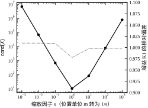
这张表要读出三层意思。
第一层，条件数跨了六个数量级。 从 6.85\times10^{6} 到 10.7，比值 6.4\times10^{5}。这不是“差一点”，是把一个“双精度有 16 位有效数字、拿掉 7 位还剩 9 位”的问题变成了“只剩 2 位”的问题。在 s=10^{-3} 下，\mathrm{cond}(X)=6.85\times10^{6} 意味着 X 的最小特征值只有最大特征值的 1.5\times10^{-7}，双精度求逆的误差在 10^{-9} 量级，而 K=YX^{-1} 直接吃这个误差。
第二层，解本身几乎没有变。 K_1 在 5.403 到 5.580 之间（变化 3.3%），K_2 在 3.037 到 3.441 之间（变化 13.3%）。也就是说：条件数坏掉六个数量级，答案只挪动了百分之几。 这个反差是 LMI 工程实践里最容易被误读的地方——有人看到“结果差不多”，就认为缩放无所谓；实际是“这次运气好，误差没有放大到可见”。换一个约束更紧的问题（比如接近 \alpha 上限，或者加了 H∞ 的 \gamma 最小化），同样的条件数会让求解器直接返回 optimal_inaccurate 或者失败。§65.8.5 第 3 条说的就是这个：缩放决定成败，但失败是概率性的，不是每次都会失败。
第三层，最优缩放点在 s=1 附近。 为什么？因为 s=1 时 x_1 与 x_2 的数值量级本来就接近：位置在 1 m 附近、速度在 1 m/s 附近，X 的两个对角元自然同量级，条件数自然好。s=10 时条件数 83.3，只比 10.7 差 8 倍，也算健康；s=10^{-1} 时 688.7 就开始变差。这给了一条实用的启发式：让状态向量的各个分量在名义工作点附近数值相当，就是好的缩放。
还有一个陷阱必须写在代码注释里：X\succeq I 与单位绑定。 式 (65-11) 那条归一化在 s=1 时表示“Lyapunov 椭球在位置方向不小于 1 m”，换到 mm 单位后它表示的是“不小于 1 mm”。所以 X\succeq I 不是一条与坐标无关的数学条件，它隐含了一个物理尺度。§65.6 算出的椭圆半轴 0.2876 m 和 1.3168 m、面积 1.1896 m^2，只在“位置用 m、速度用 m/s”下成立。换了单位必须重算椭圆，不能把数字乘个系数搬过去——因为约束本身变了，“最大椭圆”的解也就变了（表 65-18 里 K 确实变了，尽管变幅不大）。
顺带一个从表里能读出的细节：K_1 只变 3.3%，K_2 变了 13.3%，缩放主要伤的是阻尼项，灵敏四倍。一个合理的解释是：T=\mathrm{diag}(s,1) 只改位置方向的尺度，位置与速度的交叉元被拉扁，而 K=YX^{-1} 的求逆会把这种畸变更多地推到速度通道上。所以缩放出问题时，先看 K_2 有没有漂移，它比 K_1 更早报警。
这一节回答一个真实设计里天天遇到的问题：真正的执行器（电磁铁、电机、液压阀）都有一阶滞后，建模时把它扔了，得到的 K 还能用吗？
把滞后并进对象，得到三阶模型：
\dot{x}_1=x_2,\qquad \dot{x}_2=a\,x_1+u_a,\qquad \tau\,\dot{u}_a=-u_a+u \tag{65-43}
u_a 是“实际作用到质量上的加速度”，u 是控制器发出的指令，\tau 是执行器时间常数。\tau\to0 时还原式 (65-1)。在这个三阶模型上重做公共 Lyapunov 的 \alpha 最大化和 \kappa=20 的增益界：
| \tau (s) | \alpha_{\max} | K_1 | K_2 | K_a | K_a/\tau | \mathrm{cond}(X) |
|---|---|---|---|---|---|---|
| 0.005 | 1.6302 | 8.969 | 4.056 | 0.0205 | 4.10 | 2.5\times10^{5} |
| 0.010 | 1.6235 | 9.033 | 4.099 | 0.0401 | 4.01 | 3.9\times10^{6} |
| 0.020 | 1.6107 | 9.180 | 4.191 | 0.0803 | 4.02 | 2.0\times10^{6} |
| 0.050 | 1.5710 | 9.630 | 4.475 | 0.2008 | 4.02 | 2.4\times10^{6} |
| 0.100 | 1.4990 | 10.398 | 4.973 | 0.4021 | 4.02 | 1.7\times10^{6} |
| 0.200 | 1.3391 | 11.983 | 6.073 | 0.8086 | 4.04 | 5.9\times10^{4} |
| 0.500 | 0.8325 | 15.157 | 8.830 | 1.9184 | 3.84 | 1.5\times10^{3} |
表 65-19 三阶（含执行器滞后）模型的最大衰减率与增益
这张表有三处值得说。
（1）\tau\to0 时与二阶结果吻合，互证。 \tau=0.005 时 \alpha=1.6302，而二阶（\kappa=20）给出 1.6367，差 0.4%。两条完全独立的计算路径——一条在二阶模型上解，一条在三阶模型上解——给出同一个数，说明 §65.4 的二阶结果没有建模错误。这种“用更细的模型核对粗模型”的做法，比在同一条路径上重复跑十次更能发现问题。
（2）第三路反馈 K_a 严格正比于 \tau。 最后一列 K_a/\tau 是 4.10、4.01、4.02、4.02、4.02、4.04、3.84，几乎就是常数 4.02。这不是巧合：K_a u_a 在闭环里起“用执行器状态补偿滞后”的作用，而滞后越强，需要的补偿量越大。写成物理形式，K_a u_a\approx 4\tau u_a，而 u_a\approx u-\tau\dot u，所以这一项约等于 4\tau u-4\tau^2\dot u——一阶超前补偿，时间常数 4\tau。教学上这是个很漂亮的结论：LMI 自己“发现”了应该给指令加微分项，而且把系数定成了 4 倍滞后时间常数。
（3）\alpha 随 \tau 单调下降，而条件数不是。 \alpha 从 1.6302 掉到 0.8325（降 49%）。注意这笔账不对等：\tau 变了 100 倍，\alpha 只降了一半——滞后对“能把极点推多远”的破坏远小于它本身的变化幅度，因为 \tau 只影响一个“快极点”，而 \alpha 由最右的那对慢极点决定。但 \mathrm{cond}(X) 在 \tau=0.01 附近最坏（3.9\times10^{6}），\tau=0.5 时反而只有 1.5\times10^{3}。原因还是时间常数分离：\tau 小的时候，模型里同时有 0.005 s 和 1 s 两个时间尺度，差 200 倍，条件数最坏；\tau=0.5 时两个尺度只差几倍，条件数就好了。这解释了一个反常现象：算得慢不是因为问题难，是因为问题“病”。
现在看真正的问题：用二阶设计（忽略滞后）的 K 去控三阶对象，能撑到多大的 \tau？ 定义临界滞后
\tau_{\mathrm{crit}}=\min\left\{\tau>0:\ \max_{a\in[1,3]}\mathrm{Re}\,\lambda\big(A_3(a,\tau)-B_3K\big)=0\right\} \tag{65-44}
用二分求得：
| 增益来源 | \tau_{\mathrm{crit}}（a=1） | （a=2） | （a=3） | 主导极点实部 |
|---|---|---|---|---|
| \alpha=0 设计，K=[3.0113,\ 1.7395] | 0.5776 | 0.5776 | 0.5776 | -0.8697 |
| \alpha=0.9277 设计，K=[5.1188,\ 2.9007] | 0.5667 | 0.5667 | 0.5667 | -1.4587 |
表 65-20 忽略滞后的两套增益的临界滞后
两个数字都值得盯着看。
第一，\tau_{\mathrm{crit}} 与 a 完全无关，参数网格上五个点（1.0、1.5、2.0、2.5、3.0）算出来四位小数一模一样（0.5776、0.5667）。这不是采样巧合：临界滞后由闭环最右极点在穿越时的相位决定，而那对极点的实部在三个 a 下几乎不变（-0.8697 对 -0.8697，-1.4587 对 -1.4588），所以穿越点也几乎不变。换句话说，参数不确定性把极点“摊开”在实部几乎相同的位置上，而滞后打的是相位，两者互不干扰。
第二，增益大 70% 的两套设计，临界滞后只差 1.9%（0.5667 对 0.5776）。这很反直觉——\alpha=0.9277 那套的增益是另一套的 1.7 倍、控制更猛，为什么对滞后反而更脆弱一点点？因为它的极点也远了 68%（-0.8697\to-1.4587），两个效应几乎抵消。写成无量纲形式：0.5667\times1.4587=0.827 rad（47.4°），0.5776\times0.8697=0.502 rad（28.8°）。这两个“相位预算”差了近一倍，说明临界滞后不是由衰减率决定的，而是由回路增益穿越频率处的相位裕度决定的；衰减率只告诉你极点有多左，不告诉你回路在穿越点还剩多少相位。
与 §65.5 的对照。 那里算出 T_s=1.0 s 的离散 LMI 仍然可行，这里却算出连续域上的执行器滞后超过 0.57 s 就失稳。看起来矛盾，实际是两件不同的事。零阶保持的等效滞后只有 T_s/2（0.5 s）加上一个采样保持的形状因子，且离散设计重新解了一次 LMI，得到的 K=[3.0177,\ 1.9761] 比连续设计更保守。两者的共同点更重要：“能稳”和“好用”是两回事——T_s=1.0 s 时谱半径 0.9812，对应时间常数 52.7 s，那是一个在纸面上“稳定”、在机器上“不能用”的设计。\tau_{\mathrm{crit}}=0.57 s 同样只是“还能稳”的边界，不等于“还能用”的边界。
最后一步是降阶。 三阶解给出 K=[K_1,K_2,K_a]，如果执行器状态 u_a 测不到（工程上很常见），只能把第三路反馈删掉，这条“降阶控制器”还能用吗？
| \tau (s) | 全阶 K_3 | 全阶最差 \mathrm{Re}\,\lambda | 删掉 K_a 后最差 \mathrm{Re}\,\lambda |
|---|---|---|---|
| 0.02 | [3.1190,\ 1.8024,\ 0.0349] | -0.0083 | -0.0712 |
| 0.05 | [3.2819,\ 1.8979,\ 0.0874] | -0.0114 | -0.1796 |
| 0.10 | [3.5578,\ 2.0607,\ 0.1754] | -0.0181 | -0.4071 |
表 65-21 删掉执行器状态反馈后的裕度变化（\alpha=0 设计）
结果有点出人意料：删掉一路反馈，最差极点反而更左了。 \tau=0.05 时从 -0.0114 变到 -0.1796，裕度扩大了 15 倍。原因不难找：\alpha=0 的 LMI 是贴着边界解的，最差极点本来就几乎落在虚轴上（-0.0114 对应时间常数 88 s，实际上等于不收敛）；删掉 K_a 让解离开了那个边界，反而拿到了真正的裕度。
这个反常结果藏着一条工程判据：降阶的判据不是“极点是否还在左半平面”，而是“还剩多少裕度”。 一个 \mathrm{Re}\,\lambda=-0.0114 的设计在纸面上是稳定的，在机器上是发散的——传感器漂移、未建模的高频动态、量化误差，任何一样都能把 -0.0114 顶到正数。工程上对“稳定”的要求通常是 \mathrm{Re}\,\lambda\le-0.1 或者阻尼比 \ge0.3（本章的 \zeta_{\min}=0.6133 就是这个意思），而 LMI 的 \alpha 正是把这个要求写进约束的手段。如果你只解 \alpha=0 的可行性问题，得到的一定是一个“刚好活着”的设计。
把上面三小节的教训压缩成可执行的清单：
（1）离线算，在线查表。 本章最快的一道 LMI 是 6.15 ms（CLARABEL），看起来很快，但一次 \alpha 二分要 16 次求解，就是 100 ms；而且求解时间随问题规模和数据变化，最坏情况不可预测。在 1 kHz 的采样系统里，不可预测的 100 ms 等于失控。所以 LMI 的位置是“离线设计工具”，不是“在线控制器”。需要在线优化的是 MPC（第 58、80 章），那里用的是另一套办法（显式分段仿射、或者固定迭代次数的 QP 热启动）。
（2）\alpha、\kappa、X\succeq I 三个数必须一起存档。 缺任何一个，报告出来的性能指标都不能复现。§65.9.3 已经演示过：同一个“最大衰减率”问题，报告 32% 还是 7.6%，取决于 \kappa 取 6 还是 20。设计文档里应该写成“\alpha=1.6367，\kappa=20，X\succeq I，CLARABEL 0.9.0”这样一行。
（3）解完必须回代。 用双精度算 \lambda_{\max}，容差 10^{-6}。不能只看 status == optimal——表 65-16 里那些 +10^{-9} 的残差说明求解器的“optimal”和数学上的“严格可行”差的正是这一点点。
（4）限幅必须回到 LMI 里。 如果执行器饱和在控制律外面单独处理（“先算 u=Kx，再钳位”），那么 §65.6 算的不变椭圆就不再是不变集——钳位之后的实际控制量不在椭圆的假设里，轨迹可能离开椭圆并且再也回不来。正确的做法是把 |u|\le u_{\max} 写成式 (65-39) 那样的 LMI 约束，让椭圆和限幅一起满足。这一条在 §65.11 会再强调一次，因为它是 LMI 设计在现场失效最常见的原因。
（5）无解要有降级路径。 现场调参时经常遇到“这道 LMI 解不出来”。本章的经验顺序是：先降 \alpha（放宽性能），再升 \kappa（放宽增益界），再改成分段 Lyapunov（§65.9.4），最后才考虑在线调度或者改对象。这个顺序的理由是“改动越小越好”：降 \alpha 只是把要求放松，设计框架不动；升 \kappa 可能让增益大到执行器接不住；分段 Lyapunov 要增加 LMI 数量；在线调度要加传感器和调度逻辑。
（6）把求解器版本写进记录。 本章同一道 LMI 在 CLARABEL 和 SCS 上差 122 倍耗时，SCS 还返回 optimal_inaccurate。不同版本的 CLARABEL 对内点法的收敛判据也有细微差别，残差量级会变。工程上要复现一个三年前的设计，这些信息缺一不可。
这六条没有一条是数学，全是把数学装进机器时必须补的东西。第 64 章讲 LQR 时也有类似的清单，但 LMI 的清单更长——因为 LMI 把“设计”交给了求解器，也就把“求解器的脾气”一起接了进来。
第 (5) 条那个顺序不是凭感觉排的，本章的实测正好把每一级的收益量了出来。以 \alpha 计：基线是 \kappa=6 的公共设计 0.9277；升 \kappa 到 20 直接拿到 1.6367（+76%）；再用分段 P 加到 1.6992（+3.8%）；最后每点独立 P 到 1.7609（+3.6%）。第一级涨了 76%，后两级合起来只有 7.6%。 把这条降级路径反过来读，就是一条收益迅速递减的升级路径：时间只够做一件事的话，就做第一件——但那件事的价钱必须先跟执行器核对：增益范数从 5.884 涨到 9.740，1 m 阶跃的控制量峰值从 4.416 涨到 6.889，已经远超 u_{\max}=1。“\alpha 上去了、机器带不动”，是这条路径上最常见的翻车方式。
最后把散在各节的数字串起来，走一遍真实的设计评审。假设需求是这样五条：
| 项目 | 要求 | 来源 |
|---|---|---|
| 行程 | |x_1|\le1 m | 机械限位 |
| 推力 | |u|\le1 m/s^2 | 电磁铁额定电流 |
| 参数 | a\in[1,3] | 气隙变化 ±50% |
| 调节时间 | t_s\le4 s（5% 带） | 工艺节拍 |
| 执行器滞后 | \tau\approx0.02 s | 线圈电感 |
第一步，把 t_s\le4 s 翻译成 \alpha。 指数衰减包络的 5\% 判据给出 t_s\approx\ln(20)/\alpha=3.0/\alpha，所以 \alpha\ge0.75。本章 \kappa=20 下的公共 \alpha=1.6367、\kappa=6 下 0.9277，都能满足；\kappa=6 那一套更省增益，先选它。
第二步，检查行程与椭圆的相容性。 §65.7 算过：\alpha=0.928 的增益在 u_{\max}=1 下的不变椭圆，位置半轴只有 0.1675 m；\alpha=0 那套是 0.2876 m。两者都远小于需求的 1 m。这说明“1 m 行程 + 1 m/s^2 推力”这组指标本身是矛盾的——不是设计不好，是需求不自洽。
第三步，用仿真数据反算需要多大的推力。 表 65-4 的九组阶跃响应里，控制量峰值是：
| 增益 | a=1 | a=2 | a=3 |
|---|---|---|---|
| 公共 LMI（\alpha=0） | 1.011 | 2.020 | 12.707 |
| 公共 LMI（\alpha=0.928） | 3.119 | 3.119 | 4.416 |
| 标称 LQR | 2.236 | 2.236 | 5.290 |
表 65-27 1 m 阶跃下的控制量峰值（m/s^2）
这张表戳破了两件事。第一，九组峰值全部超过 u_{\max}=1，也就是说表 65-4 的曲线是“无限幅”的线性响应，与 §65.7 的椭圆（u_{\max}=1）不是同一个工况。这两类实验各自回答不同的问题，混着用会得出错误结论——这是本章最需要在评审时说清的一句话。第二，“弱增益省推力”是错的：\alpha=0 那套在 a=3 时的峰值 12.707，是 \alpha=0.928 那套（4.416）的近三倍。原因是弱增益压不住不稳定的对象——那一组响应超调 323.5%，8 s 时误差还有 3.24 m，控制量被迫跟着放大。
所以这张设计单的正确修改是：推力要求改为 |u|\le5 m/s^2（覆盖 \alpha=0.928 那套的 4.416），或者行程要求改为 |x_1|\le0.17 m（覆盖椭圆）。二选一，不能都保留。
第四步，检查滞后。 执行器 \tau=0.02 s，与表 65-20 的临界值 0.5667 s 相比只有 3.5%，安全裕度足够。如果改用 \alpha=0 那套，\tau_{\mathrm{crit}}=0.5776 s，同样安全。这一步的意义是给出“滞后可以忽略”的定量依据，而不是凭经验判断“20 ms 很小”。
第五步，签字前要核对的三件事。 ①\alpha、\kappa、u_{\max} 三个数是否写在设计单上（§65.10.4 第 2 条）；②所有可靠性结论是否都标注了“在椭圆内成立”（本条最容易漏）；③增益表的量纲与单位是否与现场一致（§65.10.2）。
这套流程跑完，一张设计单上会有三个“互相牵制”的数：\alpha 决定快慢，\kappa 决定推力，u_{\max} 决定行程。三者只能同时满足两个——这不是 LMI 的缺陷，而是所有反馈设计的共同约束，只不过 LMI 把它写成了三个可以用数字谈判的量。
上一小节留下一个悬念：那张设计单里 \kappa=6 的那套增益“够用但不宽裕”，把界放宽到 20 会怎样？用现有函数就能算清：max_alpha_common(kappa=20) 给出新的 \alpha，common_lmi(alpha, kappa=20, min_gain=True) 给出增益，再交给 ellipsoid_lmi 和 sim_step 看行程与响应。四项结果如下：
| 指标 | \kappa=6 | \kappa=20 | 变化 |
|---|---|---|---|
| 最大衰减率 \alpha | 0.9277 | 1.6364 | +76\% |
| 增益 K | [5.119,\ 2.901] | [8.889,\ 4.008] | 范数 +66\% |
| 椭圆位置半轴 | 0.1675 m | 0.0992 m | -41\% |
| 椭圆面积 | 0.6146 m^2 | 0.2402 m^2 | -61\% |
| 1 m 阶跃的控制量峰值 | 4.416 | 6.889 | +56\% |
| a=3 的超调 | 47.2% | 18.2% | -29 个百分点 |
| a=3 的 8 s 误差 | 0.4718 | 0.1698 | -64\% |
表 65-29 增益界从 6 放宽到 20 的四项代价与三项收益
（表中 \alpha=1.6364 与表 65-12 的 1.6367 差 0.02%，来源是二分落在容差的不同一侧——两次求解都取“最后一个可行点”，端点附近 \alpha 每变 10^{-3}，\|K\| 只变 10^{-3} 量级，不影响任何结论。）
这张表把“三角关系”量化了。收益在时间域：\alpha 涨 76%，超调从 47% 掉到 18%，8 s 残差从 0.47 掉到 0.17——后者尤其重要，因为那组响应本来就没收敛（8 s 时还在慢慢爬），残差降 64% 意味着它离收敛更近了。代价在两处：一是推力峰值涨 56%（从 4.4 到 6.9 m/s^2），二是容许行程缩 41%（位置半轴从 0.17 m 到 0.099 m）。
注意行程这一项的方向：增益越大，能安全工作的范围越小，因为同样的行程会产生更大的控制量，更快撞到 u_{\max}。这与“增益大更稳”的直觉相反，但原因很清楚——椭圆是按 u_{\max}=1 算的，增益翻倍，同一个椭圆上的控制量就翻倍，所以椭圆必须缩小才能把 Kx 压回限幅之内。表 65-9 里“面积从 1.1896 缩到 0.6146”讲的是同一件事的第一次，这里是第二次，缩得更狠。
所以“要不要放宽 \kappa”这个问题没有统一答案，取决于三件事的排序：
第三种情况在工程上比想象中常见。它出现时的典型征兆是：\alpha 已经压到 0.2 以下，椭圆还是覆盖不了行程，而推力已经贴着额定值。这时继续调 LMI 是徒劳的——问题已经不在控制器里了。识别这个征兆，比多会一种降保守手段更有价值。
到这里，本章的方法已经完整：从“无穷多条要求”怎么压成有限条（§65.2），到怎么调、怎么改（§65.8、§65.9），再到怎么装进机器（§65.10）。最后要回答的是判断题：什么时候该用 LMI，什么时候用了反而更糟。
第一，把“对每个 a 都成立”压缩成“对两个 a 成立”。 这是本章最核心的一条，也是最容易被低估的一条。参数区间 [1,3] 里有不可数个 a，设计要求是不可数个不等式；顶点性把它们换成 2 条。§65.6 的网格验证是这条性质的实证：只解了 a=1 和 a=3 两条 LMI，然后在 41 个参数点上逐点验算，\zeta_{\min}=0.6133、\max\mathrm{Re}\lambda=-0.0065——全区间都稳。没有 LMI，这件事只能用“扫一遍网格看看”来做，而网格永远不能证明“之间也没问题”。
第二，证书可以独立核验。 一个 LMI 设计的产物不是一个增益，而是三元组 (K,\ X,\ \alpha)。拿到这三个东西，任何人都能在三行 NumPy 里复核：算 A_iX+XA_i^{\mathsf T}-BKX-XK^{\mathsf T}B^{\mathsf T}+2\alpha X 的特征值是不是负的。§65.10.1 的残差表就是这种复核的结果——它不需要重跑求解器，也不需要相信任何人的实现。这一点在评审、验收、事故调查里极其重要：“我相信这个 K 是稳的”和“这个 X 证明它是稳的”，是两种完全不同强度的陈述。
第三，指标可以叠加。 衰减率 \alpha、H∞ 的 \gamma、不变椭圆、控制量限幅，在 LMI 框架里都是同一种东西——矩阵不等式。加一条指标就是加一行约束（式 65-39 的限幅就是加了两行），不需要换方法、换框架、重写代码。本章的六套设计（三套连续增益、离散设计、H∞ 设计、三阶带滞后设计）在代码里共用的只有 solve_lmi 一个函数，差别仅在约束列表里多了或少了几行。
第四，保守性可以计价，也可以逐项削减。 §65.9 的“三笔账”是本章最实用的产出：把“LMI 保守”这个模糊的抱怨拆成三笔可以用数字支付的账——Lyapunov 形状、P 的参数依赖、人为约束。拆开之后，改进就有了优先级：本章的实测是第三笔最大（32%→7.6% 的纠正），所以第一件该做的事是检查 \kappa 和 X\succeq I，而不是急着上参数依赖 Lyapunov。没有这种拆法，“降保守”就只能靠试。
第一，保守是结构性的，不是实现问题。 H∞ 的证书 \gamma=9.1759 对应的真值是 1.9506，差 4.7 倍（表 65-11）。这个差距不会因为换求解器、加迭代次数、调容差而缩小——它来自“用二次 V 证明 L_2 增益”这个选择本身。要缩它只能换非二次 Lyapunov 函数（分段二次、多线性），代价是规模爆炸。所以工程上必须接受：LMI 给的 \gamma 是上界，不是真值；用它做相对比较，不要用它做绝对指标。
第二，凸性只对“换变量后的那一小组问题”成立。 本章能做，是因为 K 只以 Y=KX 的形式出现一次（式 65-8）。一旦出现下面三种情况，凸性立刻消失：①输出反馈（K 与观测器增益同时待定，出现 K C X 的乘积）；②结构化约束（K 的某些元素必须为零，比如分散控制）；③固定阶控制器（阶数低于对象阶数）。这三类问题至今没有多项式时间的精确解法，只能用交替优化、D-K 迭代、或把结构约束放松成凸包——每种都只能得到局部最优。
第三，参数个数是指数爆炸的。 顶点法的约束条数是 2^m，m 是独立不确定参数的个数。本章 m=1，2 条，毫无压力；m=10 就是 1024 条，m=20 是一百万条。工程上的出路有两条：一是改用范数有界描述 + D 缩放（§65.4 的 \varepsilon=4.7299 那套，把 2^m 条压成 1 条，代价是更保守），二是改用仿射参数依赖的 Lyapunov 函数（P(\theta)=\sum\theta_iP_i），它的约束数随 m 线性增长，但需要额外的“多胞”结构条件。
第四，限幅与饱和会让证书失效。 这一条 §65.10.4 已经强调过，值得再说一次，因为它是现场失效最常见的原因。不变椭圆 \mathcal{E}=\{x:x^{\mathsf T}X^{-1}x\le1\} 的定义里隐含了“u=Kx 真的被执行”这个前提。一旦执行器饱和，实际施加的是 \mathrm{sat}(Kx)，闭环向量场就变了，\dot V<0 的推导不再成立。表现是：仿真时“前 0.3 s 一切正常”（没饱和），之后突然失控（饱和发生，椭圆假设破了）。
第五，数值上脆弱。 §65.10 的三小节讲的全是这件事：残差符号会在 10^{-9} 量级翻转、条件数随缩放跨六个数量级、阶数一升就病态、求解器状态词需要逐个辨义。相比之下，第 64 章的 Riccati 方程只要 3.4 ms、没有可行性问题、残差稳定在 10^{-12}。LMI 换来了表达能力，付出的是数值稳定性。
以下五种情形，用 LMI 是错误的或者不划算的：
（1）单回路、模型够准、没有硬约束。 这种情况 PID 就是最优选择，不需要论证（第 44、106 章）。本章的算例如果只考虑标称点 a=2、不要求鲁棒性，LQR 给出的 K=[4.2361,\ 3.0777] 比任何 LMI 解都更省事，而且性能更好（调节时间 3.31 s，LMI 的 1.98 s 只在 \alpha 设计下才更快）。用 LMI 的门槛是“真的有一族模型”，而不是“想显得高级”。
（2）约束主导工况。 如果设备一半以上的动作会撞限幅，LMI 的椭圆约束会把设计逼到很小的工作域，性能反而不如 MPC（第 58、80 章）。判据与第 64 章相同：看饱和占空比，超过 50% 就该换方法。LMI 在 MPC 里的正确位置不是替代它，而是给 MPC 算终端集和终端代价——那正好是本章的不变椭圆问题。
（3）大纯延迟。 纯延迟超过主导时间常数的一半时，LMI 只能靠加大 \alpha 硬压，而 §65.10.3 已经证明：忽略 0.57 s 的滞后就会失稳，而且这个上限与增益大小几乎无关。延迟应该由 Smith 预估单独处理（第 47、107 章），或者用预测型 LMI（把延迟写成积分不等式），后者超出本章范围。
（4）非线性主导。 LMI 的全部结论都建立在“A(a)x+Bu 这个线性结构”上。大幅值摆、大姿态机动、气动非线性强的工况，线性化后的证书离开平衡点就失效。此时应该用增益调度（把本章的分段 Lyapunov 推广成 LPV 设计）或者非线性 MPC。
（5）结构化约束。 如果控制器必须分散（每个执行器只能用本地传感器）、或者阶数必须很低（嵌入式内存限制），那么问题不凸，LMI 只能给一个“忽略结构约束后的下界”，实际实现要另想办法。本章的降阶讨论（§65.10.3）已经露出这个问题的一角：删掉一路反馈后仍然稳，是运气好，不是设计保证。
五条放在一起，可以压成一句判据：LMI 值得用的场合，是“不确定性真的存在”和“必须给出证明”这两条同时成立的时候。 只满足第一条，用整定得更保守的 PID 或者增益调度就够了，代价小得多；只满足第二条（比如评审要一份稳定性证明，但对象其实是确定的），用 Lyapunov 方程手算一个二次型更快，也更不容易在数值上翻车。
本章算例之所以适合 LMI，是因为三条前提都成立：a 的漂移有明确物理来源（气隙变化改变刚度）、区间测得出来（±50%）、失效模式是发散而不是精度不够。三条都指向“必须给证书”。反过来说，如果一个项目里没人能说清“不确定参数的区间是怎么来的”，那 LMI 再精确也只是把猜测形式化了——建模的诚实程度，决定 LMI 的上限。
本章的方法处在一个方法族的中心位置，四个方向都能延伸：
还有一个方向值得指出：往调度走。§65.9.4 的分段 Lyapunov（共享一个 K、分两段 P）其实是 LPV 设计的雏形——如果把 P 写成 a 的连续函数并加上变化率约束，就得到参数依赖 Lyapunov 的 LPV 控制器。本章没有展开，因为它需要额外的“参数可测”假设，而磁悬浮的气隙往往测不准。
| 对象/工况特征 | 首选方法 | 理由 | 指向 |
|---|---|---|---|
| 参数在已知区间内变化、线性、全状态可测 | 多胞 LMI | 顶点性把无穷条压成 2^m 条 | 本章 §65.2、§65.4 |
| 参数不确定但只知范数界 | 范数有界 + D 缩放 | 一条约束换 2^m 条，更保守但可扩展 | 本章 §65.4.4 |
| 需要抑制外部扰动、有频域指标 | H∞ LMI | 有界实引理直接给出 \gamma 约束 | 本章 §65.9.2、第 63 章 |
| 有控制量/状态限幅 | LMI + 不变椭圆 | 限幅必须进约束，否则证书失效 | 本章 §65.7、§65.10.4 |
| 采样实现、T_s 较大 | 离散 LMI | 直接离散化，避免连续设计的失真 | 本章 §65.5 |
| 约束主导、需在线优化 | MPC | LMI 只负责终端集 | 第 58/80 章 |
| 大纯延迟 | Smith 预估 | 延迟单独处理 | 第 47/107 章 |
| 输出反馈、固定阶、分散结构 | 迭代 LMI / μ 综合 | 问题非凸，只能局部最优 | 第 63 章 |
| 单回路、模型准确 | PID | 简单、经验成熟 | 第 44/106 章 |
表 65-22 LMI 与相邻方法的适用边界
这张表的读法与第 64 章的表 64-14 相同：从上往下匹配，第一行能满足就不要往下走。 需要提醒的是第一行和第二行的区别——“参数在区间内变化”和“只知范数界”看起来接近，实际决定了 LMI 的规模：前者 2^m 条，后者 1 条。现场如果拿不到参数的区间（只有“误差不超过 20%”这种信息），就应该选第二行。
把本章批评过的做法集中成一张对照表，每条都注明章内可查的数字：
| 错误配方 | 现场症状 | 根因 | 正确做法 | 本章可查 |
|---|---|---|---|---|
| 只最大化 \alpha，不设增益界 | 报出 \alpha=19.9997、K_1=1198，执行器接不住 | LMI 对 (X,Y) 齐次，\alpha 可随增益无限增大 | 同时加 X\succeq I 与 \|K\|\le\kappa，并写明 \kappa | §65.1.4、表 65-12 |
| 拿标称 LQR 增益当鲁棒设计 | a 漂到 3 时超调 76%、静差 0.76 | 前馈按 a=2 算，被控对象直流增益变了 | 用多胞 LMI 重算，或按 k_r=K_1-A_{\text{nom}} 逐点算前馈 | 表 65-4、式 (65-30) |
| 只解 \alpha=0 的可行性 | 极点 -0.0114，“稳定”但不收敛 | 可行性问题的解一定贴着约束边界 | 用 \alpha 二分定裕度，工程上取 \mathrm{Re}\lambda\le-0.1 | §65.10.3、表 65-21 |
| 忽略执行器滞后 | 台架正常、装机发散 | 滞后吃相位，与增益大小几乎无关 | 建模时并进一阶滞后，或用 §65.10.3 的 \tau_{\mathrm{crit}} 估上限 | §65.10.3、表 65-20 |
| 换单位不重算 X\succeq I | 求解器偶发失败、K 跳变 | 归一化约束绑定物理尺度，条件数跨六个数量级 | 先无量纲化（让各状态同量级），再解 LMI | §65.10.2、表 65-18 |
表 65-23 五个错误配方与本章的对照位置
五条里最隐蔽的是第二条和第四条：它们都不报错，仿真曲线也很漂亮，只是在真实参数或者真实执行器上失效。这两条的共性在于模型本身缺了一块（参数变化、执行器动态），而不是求解或调参出了问题。遇到“仿真好、现场坏”，应该先查模型欠了什么，而不是先调参数。
最后收束。本章真正希望读者带走的不是 Schur 补的推导，而是三件更通用的东西：
一是“把无穷换成有限”的思路。 顶点性是这套思路的一个实例，但想法本身更宽：只要约束关于参数是凸的、且参数在凸包里，就只需要查顶点。这个思路在讨论“不确定性传播”“最坏情况分析”“区间算法”时都会再出现。
二是“证书”这个概念。 一个设计的好坏，不该由“跑了几条曲线”来判定，而该由“能否给出一个可独立核验的证明”来判定。(K,X,\alpha) 就是一个证书，它的强度远高于“我扫了 41 个点都没问题”。
三是“保守性要记账”。 任何保守的方法都必须知道保守在哪里、有多大、怎么减。§65.9 的三笔账是一个模板：先分账，再逐项支付。这个习惯不只适用于 LMI——第 64 章的“事后限幅”、第 63 章的“μ 界的保守”，都可以这样处理。
表 65-22 是按“对象特征”组织的，但现场工程师手上往往没有一张特征表，只有三个能回答的问题。把这一节改写成问答形式，可能更好用。
问题一：不确定参数能不能在线测到？
能测（有气隙传感器、有力传感器），就可以用调度：每点独立 P，\alpha 从 1.6367 提到 1.7609（\kappa=20），多拿 7.6%。测不到，就只能用公共 P；退一步的办法是 §65.9.4 的分段 Lyapunov——不需要在线调度，只按“最坏的那个参数区间”分两段，能拿到 3.8%。
这个问题的答案还决定了实现的复杂度：调度要在线查表、要处理参数估计的噪声、要保证切换时 V 不跳变（本章没有讨论这一点，它是一个独立的技术问题）；分段 P 只在设计阶段多解一道 LMI，运行时与定常增益完全一样。
问题二：正常工况下会不会撞限幅？
会，就该考虑 MPC（第 58、80 章）；不会，LMI 的椭圆约束就是够用的。判断的量化办法在本章有现成的：算一下椭圆的位置半轴，再和实际行程比。如果实际行程是半轴的 3 倍以上（本章 1 m 对 0.1675 m 就是 6 倍），说明限幅在整个工况里都是激活的，LMI 的“椭圆内成立”这类结论几乎覆盖不到实际轨迹。
这一问容易答错，因为仿真时不加饱和函数，曲线永远漂亮。§65.10.5 的表 65-27 就是证据：九组响应的控制量峰值全部超过设定值，但没有一组报错或者明显失真。
问题三：纯延迟和执行器滞后有多大？
拿它和 \tau_{\mathrm{crit}} 比。本章的临界滞后是 0.57 s，与增益大小几乎无关（两套差 1.9%），所以这个数可以当作“对象的属性”来用，不必每次重新设计。如果实际滞后小于 \tau_{\mathrm{crit}} 的 10%，忽略它是安全的；在 10%–50% 之间，应该把滞后并进模型重解（§65.10.3 的三阶 LMI）；超过 50%，LMI 就不是好工具了，该换 Smith 预估（第 47、107 章）或预测控制。
三问的答案组合起来，基本就能定位到表 65-22 的某一行。这三个问题的共同点是：它们问的都是“模型之外的信息”——能不能测、会不会撞、滞后多大——而这些恰恰是 LMI 本身无法回答的。求解器只会在给定的约束里找可行点，不会提醒你“约束漏了一条”。
把第 64 章的 LQR 和本章的 LMI 放在同一台机器上，逐项对比，能看清“多花的力气买到了什么”：
| 对比项 | 第 64 章 LQR | 本章 LMI（\alpha=0.928） | 差距 |
|---|---|---|---|
| 适用范围 | 只对标称点 a=2 | a\in[1,3] 全区间有证书 | 质变 |
| a=3 的超调 | 76.0% | 47.2% | -38\% |
| a=3 的 8 s 误差 | 0.7597 | 0.4718 | -38\% |
| a=2 的调节时间 | 3.31 s | 1.98 s | -40\% |
| 增益范数 | 5.24 | 5.88 | +12\% |
| 设计计算量 | 3.4 ms（一次 ARE，第 64 章实测） | 约 100 ms（16 次二分） | \times30 |
表 65-28 LQR 与 LMI 在同一算例上的六项对照
前五行说明“多花的力气是值的”：用 12% 的增益换来了两端的性能改善。a=3 端的超调从 76% 降到 47%，a=2 端反而更快（1.98 s 对 3.31 s），这两件事同时发生，是因为 LMI 的解不在“标称最优”的位置上，而是被拉到了两个顶点的折中点。
第六行说明代价：设计时间贵 30 倍。但这个代价只在设计阶段发生一次，运行时两者完全一样（都是一次内积）。所以对“设计一次、运行十年”的设备，这 30 倍可以忽略；对“每天要重算一次增益”的自适应系统，就要重新权衡。
还有一行不在表里：LQR 的“最优”是可证的（Riccati 方程的最小解），而 LMI 的 \alpha=0.928 只是“这个 \kappa、这个归一化下的最大可行值”，换一个 \kappa 就是另一个数。这不是说 LMI 不好，而是说两者的“好”含义不同——一个是“对单模型最优”，一个是“对模型族可行且尽量好”。比较性能之前，先确认比较的是同一个问题。
本章所有数字都来自两个脚本：ch065_sim.py 负责计算，ch065_figs.py 负责画图。与前面几章不同，这两个脚本必须依赖一个优化库——LMI 的本质是凸优化问题，手写内点法既没必要也不可能比成熟求解器更可靠。依赖只有两个：cvxpy（建模层）和 CLARABEL（求解层），后者是 cvxpy 自带的可选依赖，装好 cvxpy 就有了。
"D:\Anaconda3\envs\py311\python.exe" code/ch065_sim.py
"D:\Anaconda3\envs\py311\python.exe" code/ch065_figs.py第一条命令按顺序跑 10 组实验，把每个数字打印到终端；第二条调用同一批实验函数，生成 figs/ch065/ 下的 11 张图（每张同时输出 SVG 与 PDF）。两条命令的顺序不能颠倒——图脚本直接 import ch065_sim，用的是同一份代码，所以图和正文的数字永远同源。
ch065_sim.py 的组织顺序与正文一致：常量 → 对象与离散化 → LMI 工具 → 六类设计（公共、调度、范数有界、H∞、离散、椭圆）→ 降阶 → 10 组实验 → main()。中间那块“LMI 工具”是全章的核心，只有 60 行，后面所有的设计都是它的组合。
ch065_figs.py 的组织更简单：11 个 figNN_xxx() 函数，每个函数调用一次 sim.exp_xxx()，画完就 save。图里不写标题（标题在正文图注里），不写结论（结论在正文里），只画数据。
所有 LMI 的差别只在约束列表，骨架是同一个。以公共 Lyapunov 的衰减率问题为例，common_lmi 里真正干活的是这几行：
X = cp.Variable((n, n), symmetric=True)
Y = cp.Variable((1, n))
cons = [X >> np.eye(n)]
for a in verts:
A = Amat(a)
cons.append(A @ X + X @ A.T - B @ Y - (B @ Y).T + 2.0 * alpha * X << 0)四行里每一行都对应正文的一个结论：
X = cp.Variable((n,n), symmetric=True)：必须声明 symmetric=True。不声明的话，cvxpy 会把 X 当一般矩阵，X\succ0 的约束就变成“对称部分正定”，解出来可能是非对称矩阵，K=YX^{-1} 也就错了。Y = cp.Variable((1, n))：Y 就是式 (65-7) 的 KX。它是行向量，维度 1\times n，与 B 的列数对齐。X >> np.eye(n)：式 (65-11) 的归一化。>> 在 cvxpy 里表示半正定，不是“远大于”。A @ X + X @ A.T - B @ Y - (B @ Y).T + 2*alpha*X << 0：式 (65-8) 的左边。注意 (B @ Y).T 不能写成 Y.T @ B.T 的效果虽然相同，但 cvxpy 对 B @ Y 这种“常数乘变量”的识别更稳。这四行是全章唯一的“数学”，剩下的都是把不同的约束往 cons 里加。 加 H∞ 就多一个 2\times2 的分块（式 65-33），加限幅就多两个标量约束（式 65-39），加增益界就多一个分块（式 65-12），加离散就换 A_d、B_d（式 65-31）。理解了这四行，本章所有代码都能读懂。
solve_lmi(cons, obj, solver)：统一入口。它做三件事：把 obj 包成 cp.Minimize（如果没有目标就最小化 0，即纯可行性）、计时、返回 (problem, 耗时)。把这个函数单独抽出来，是因为后面要做求解器对比（exp_solver）——只要换一个 solver 参数，同一道 LMI 就能在 CLARABEL、SCS、SCIPY、OSQP 上跑。所有耗时统计都必须走这一个函数，否则不同实验的计时口径会不一致。
common_lmi(alpha, verts, min_gain, kappa)：公共 Lyapunov 设计，返回 X、Y、K、耗时。三个可选参数各有分工：verts 决定验哪几个顶点（默认两个），kappa 决定增益界（None 表示不加界，用于演示齐次性陷阱），min_gain 决定是“只求可行”还是“在可行里取增益最小的”。最后一步还原增益是 K = Y @ inv(X)，这一行只在求解之后执行一次。
max_alpha_common(lo, hi, tol)：二分求最大衰减率。15–16 次求解收敛到 10^{-3}。这里有一个实现细节值得注意：二分的方向不能反。可行时 lo = mid（往大试），不可行时 hi = mid（往小退），最后返回 lo——它一定是可行的那个端点。如果返回 hi，拿到的就是一个“差一点不可行”的值，回代残差会是正的。
vertex_lmi / max_alpha_vertex：顶点独立（调度）版本。与公共版的差别只有一处：每个顶点用自己的 X_i、Y_i。这相当于允许 P 依赖参数，也就是允许 K 随 a 变。它给出的是“如果参数可测、可以调度”的上界，用来衡量公共 P 的代价（§65.9.1 的第二笔账）。
normbound_lmi：范数有界不确定性 + D 缩放。这里多了一个决策变量 \varepsilon（代码里叫 eps），它出现在 A 的扰动项和 \varepsilon E^{\mathsf T}E 里。\varepsilon 是标量，所以问题仍然是凸的。本章实测 \varepsilon=4.7299，\alpha=0.9277——与多胞版完全相同，验证了单参数时 S-procedure 无损。
hinf_lmi(gamma, ...) / min_gamma_hinf：给定 \gamma 求可行性，再对 \gamma 二分求最小。与 \alpha 的二分方向相反：\gamma 越小越好，所以可行时 hi = mid。这个符号容易搞混，代码里两个函数并列放置就是为了对照。
hinf_true(K, grid)：真值计算。给一个 K，在 4000 个频点、241 个参数点上算闭环范数的最大值。这是全章最贵的函数（§65.12.5），也是唯一能回答“证书离真值多远”的工具。没有它，表 65-11 的 4.7 倍就无从谈起。
disc_lmi(Ts, verts, alpha)：离散 LMI。先 cont2discrete 做零阶保持，再解 A_dXA_d^{\mathsf T}-X\prec0 的衰减率版本，目标谱半径 \sigma=e^{-\alpha T_s}。注意这里不是“先连续设计再离散化”，而是直接在离散域设计，两者的结果差别在 T_s 大时非常明显（§65.5）。
ellipsoid_lmi(K, x1max, umax)：给定 K，求最大不变椭圆。它与前面所有函数的方向相反——K 是输入不是输出，X 是唯一的变量，目标是 \max\log\det X（等价于最大面积）。这也是唯一一个“不需要 X\succeq I”的函数，因为椭圆的绝对大小在这里正是要优化的对象。
lag_lmi / max_alpha_lag：§65.10.3 的三阶版本。它比 common_lmi 多一个 tau 参数，内部调用 Amat_lag(a, tau) 构造三阶矩阵。这个函数里第一次出现 try/except，原因是二分到不可行端时 CLARABEL 会直接抛异常（§65.10.1 的状态词表），必须在函数内部吃掉。
sim_step(K, a, Ts, t_end, r)：闭环阶跃仿真。前馈系数 k_r=K_1-A_{\text{nom}} 在函数内部算，settle_time 用“最后一次离开 5% 带的时刻”定义调节时间。这里特意用 5% 而不是第 64 章的 2%：本章多个设计在 a=3 端有长拖尾，2% 带会把 t_s 拉到 8 s 的仿真边界上，失去分辨率；改成 5% 后九个组合都能落在可分辨的区间内。两章的 t_s 因此不可直接比较。
| 函数 | 输出内容 | 正文位置 |
|---|---|---|
exp_open_loop |
三个参数点的开环极点、LQR 增益、闭环极点 | 表 65-1、表 65-2、§65.1.1 |
exp_common_alpha |
公共 / 调度 / 范数有界三种表述的最大 \alpha | 表 65-3、图 65-3、§65.4.2 |
exp_robust_design |
三套增益在三个参数点上的极点、t_s、e_{ss}、超调 | 表 65-4、图 65-4、§65.4.3 |
exp_hinf |
多胞 \gamma、单顶点 \gamma、真值、LQR 真值 | 表 65-11、图 65-5、§65.9.2 |
exp_discrete |
十一档 T_s 的离散增益、谱半径、可行性 | 表 65-6、图 65-6、§65.5.2 |
exp_solver |
四个求解器的状态与耗时 | 表 65-10、图 65-7、§65.8.4 |
exp_scaling |
七档缩放的 \mathrm{cond}(X) 与增益 | 表 65-18、图 65-8、§65.10.2 |
exp_ellipsoid |
两套增益的最大不变椭圆、半轴、面积 | 表 65-9、图 65-9、§65.7.6 |
exp_vertex_grid |
41 个参数点上的阻尼比与最大实部 | 表 65-5、图 65-10、§65.6.4 |
exp_lag |
七档滞后的三阶 \alpha、\tau_{\mathrm{crit}}、截断裕度 | 表 65-19 至表 65-21、§65.10.3 |
表 65-24 仿真实验与正文图表的一一对应
这张表的用处是回查：正文里任何一个数字，都能在这一行找到它的生产函数；任何一个函数，都能在这一行找到它服务的结论。写作过程中有几次“数字对不上”（§65.9.3 的 32%→7.6%、§65.5 的采样边界），都是靠这张表的对应关系回查出来的。
需要说明的是，表 65-12（\kappa 三档）、表 65-13（分段 Lyapunov）、表 65-16（回代残差）这三组数字来自写作过程中的临时探针，没有固化进 ch065_sim.py。原因是它们要么需要改函数签名（分段 Lyapunov 要重写约束生成），要么是单次诊断（残差表）。如果读者要复现，表 65-12 可以用 common_lmi(alpha, kappa=...) 配合 max_alpha_common 直接得到，表 65-13 需要把 common_lmi 的顶点循环拆成两段、分别用自己的 X_i 但共用 Y，表 65-16 只需三行 NumPy 回代。
给 10 组实验逐个计时（Python 3.11 + NumPy + cvxpy，单线程）：
| 实验 | 耗时 / ms | 占比 | 主要开销 |
|---|---|---|---|
exp_hinf |
17957.6 | 86.4% | 4000 频点 × 241 参数点的真值网格 |
exp_lag |
1090.9 | 5.3% | 七档 \tau 各 15 次二分 + 临界滞后的再二分 |
exp_solver |
772.6 | 3.7% | SCS 单次求解 751 ms 占绝大部分 |
exp_common_alpha |
400.2 | 1.9% | 三套设计各 15–16 次二分 |
exp_robust_design |
237.1 | 1.1% | 九组闭环仿真，每组 4000 步 |
exp_ellipsoid |
134.9 | 0.6% | 两次 \log\det 最大化 |
exp_discrete |
83.0 | 0.4% | 十一档 T_s，含三次不可行 |
exp_scaling |
48.8 | 0.2% | 七档缩放各一次求解 |
exp_open_loop |
37.6 | 0.2% | 三次 LQR + 九次仿真 |
exp_vertex_grid |
8.2 | 0.0% | 41 次 2×2 特征值 |
| 合计 | 20770.9 | 100% | — |
表 65-25 十组实验的耗时分布
这张表的结论比数字本身更有意思：86% 的时间花在“算真值”上，而不是“算设计”上。 十组实验里，真正解 LMI 的部分（exp_common_alpha + exp_scaling + exp_ellipsoid + exp_discrete + exp_lag）加起来约 1.76 s，而 exp_hinf 一个就 18 s。这不是实现效率的问题——4000×241 ≈ 96 万个频点-参数组合，每个都要算一次 2\times2 矩阵的奇异值，这个量级省不掉。
这个分布和第 64 章的表 64-15 形成了有趣的对照：那里 80% 的时间花在“重复求解同一个算法”，这里 86% 的时间花在“验证结果”。两种“贵”的性质不同：第 64 章的重复是可以优化掉的（只跑 exp_lqr 就够），本章的验证是省不掉的（不扫网格就不知道证书差 4.7 倍）。工程上的启示也随之不同——设计阶段可以砍实验，评审阶段不能砍验证。
另外两点值得注意。第一，exp_solver 里 SCS 一个人占了 97%（751 ms / 772 ms），这也解释了表 65-10 里 122 倍的差距：不是 CLARABEL 快得出奇，而是 SCS 在这类小规模 SDP 上收敛得慢。第二，exp_lag 的 1.09 s 里有一半花在临界滞后的再二分上——每个 \tau 要再解 15 次可行性问题，只为了把 \tau_{\mathrm{crit}} 定到 10^{-4} s。这种精度在实际设计中是浪费的，10^{-2} s 就够，代码里保留高精度只是为了让表 65-20 的四位小数稳定。
ch065_figs.py 的 11 个函数与正文 11 张图一一对应，命名规则是 figNN_简短英文，编号与图号一致。三个绘图约定值得单独说明，因为它们决定了图能不能直接进排版：
第一，图内不写标题。 标题全部放在 Markdown 图注里（形如“图 65-1 标题”的那一行，紧跟图片路径），这样同一张图可以在正文、幻灯片、网页三处复用而不需要改图。图内只保留坐标轴标签、图例和必要的标注。
第二，轴标签里有中文就绝不用 $...$。 这是本章真实踩到的坑（§65.12.7 第 1 条）。plot_styles.py 里 mathtext.fontset 设成了 stix，它只有西文字形；一旦整串标签被 $...$ 包住，中文就会变成方框并刷一屏 Font 'default' does not have a glyph 警告。正确写法是“不确定参数 a”，把变量名写成普通文本，或者只把变量部分放进 $...$、让中文留在外面（但后者在 matplotlib 里会触发同样的回退失败，所以本章统一采用前一种）。
第三，图里不出现“结论性”的注释，只出现“位置性”的标注。 比如图 65-5 标了“LMI 证书 9.18”，因为它标的是那条虚线的位置；但不写“证书保守 4.7 倍”，那句话属于正文。这条约定的好处是：图可以被别的章节借用而不带来错误的语境。
前三处是本章写作过程中真实撞到的，后两处是代码里最容易写错、但这次侥幸写对的地方：
| 位置 | 表面现象 | 真正的原因 | 处理 |
|---|---|---|---|
fig05 / fig08 / fig10 的轴标签 |
中文变方框，刷屏警告 | 整串标签进了 mathtext，stix 无中文字形 |
中文标签不包 $...$，直接写“不确定参数 a” |
common_lmi 不加 kappa |
解出 \alpha=19.9997、K_1=1198 | 式 (65-8) 对 (X,Y) 齐次，\alpha 可随增益无限增大 | 同时加 X\succeq I 与 \|Y\|\le\kappa，并检查量级 |
max_alpha_lag 的二分 |
第 8 次求解时抛 SolverError |
试探点落到可行域外很远处，求解器直接放弃 | 函数内 try/except，把异常当“不可行” |
exp_scaling 的增益还原 |
增益“看起来对”，但差 13% | 换回原坐标要右乘 T：K=(YX^{-1})T，漏乘 T 得到的是缩放坐标下的增益 | 单独一行写 K = (Y @ inv(X)) @ T，并在注释里标明单位 |
fig06 的参考线 |
\sigma 参考线位置不对 | 用 min(ts) 当基准，而 \sigma=e^{-\alpha T_s} 应逐点算 |
参考线只在最小 T_s 处画一条，作为“起点”而非“包络” |
表 65-26 五处容易写错的地方
第三行值得再解释一句，因为它揭示了一个通用规律：二分法的失败模式不是“算错”，而是“问了一个求解器不肯回答的问题”。 把二分写成“可行/不可行”二元判断，隐含假设了求解器对任何输入都会给出明确答复；实际上凸优化求解器在数值上远离可行域时可能直接抛错。任何“反复求解、根据结果改参数”的流程都必须处理这个分支，否则会出现“代码在某些参数下才崩”的诡异现象。
第四行也一样。相似变换 T 在 LMI 里的作用是把 X 拉到好条件数，但解出来的是缩放坐标下的增益，换回物理坐标必须右乘 T。这一步漏掉的后果不是报错，而是得到一个“数值合理但物理错误”的增益——本章表 65-18 里 K_1 从 5.403 到 5.580 的差异，正好是这个量级，如果漏乘就会被认为是“缩放带来的正常波动”，从而完全看不出来。
想把本章代码用到别处，只需要改三个地方：
改对象。 替换 Amat(a) 与 B、BW、C1、D12 这几个常量，其余全部可用。注意 Amat 必须是 a 的仿射函数（本章是 [0,1;a,0]），否则顶点性失效（§65.2.5 的第四条）。如果对象本身就是多参数的，改 VERTS 为顶点列表，common_lmi 会自己循环。
改指标。 \alpha 直接传给 common_lmi，\gamma 通过 hinf_lmi 的 gamma 参数传入，椭圆约束改 X1MAX、UMAX。不要同时改三样——本章的经验是先定 \alpha 看性能天花板，再定 \kappa 看可实现性，最后才调椭圆。顺序颠倒的话，很容易在“椭圆太小”和“增益太大”之间来回。
改单位。 如果状态的量级相差超过两个数量级，先做相似变换再做 LMI（§65.10.2），不要指望求解器自己处理。判断标准很简单：把所有状态在名义工作点的数值列出来，如果最大与最小差 100 倍以上，就该缩放。
还有三样东西不要改，除非清楚后果。
X >> np.eye(n) 不要换成 X >> 0。 后者在数学上更“干净”（X 只需正定），但它去掉了归一化，式 (65-8) 重新变成齐次问题，\alpha 会随增益一起无限增大——本章 §65.1.4 那个 \alpha=19.9997、K_1=1198 的解就是这么来的。要让解有物理意义，就必须有某种“钉住尺度”的约束，X\succeq I 只是最方便的一种。
增益界不要为了“让指标好看”而放大。 \kappa 从 6 放到 20，\alpha 涨 76%，很诱人；但同一组解在 1 m 阶跃下的控制量峰值也从 4.416 涨到 6.889。\kappa 的含义是“执行器允许多大增益”，它该照着设备填，不该照着指标填。
二分精度不要随便调低。 本章所有 \alpha 都报到四位小数，但那是容差端点附近的产物，真正稳定的信息只有前三位。把 tol 放到 10^{-1}，\alpha 会偏小千分之几，不影响结论，却能让二分从 16 次降到 8 次——只想快速摸底时，这是划算的。
最后给一份可以照着敲的清单，用来确认“跑出来的结果和书里一致”：
python code/ch065_sim.py，总耗时应在 20 s 上下（本机 20.5 s，不同机器 ±30% 正常）。python code/ch065_figs.py 应打印“完成：figs/ch065 共 11 张（SVG+PDF）”，且没有字体警告。axes.unicode_minus=False 已处理）。只要七条都对，本章的所有数字就能在你机器上复现。如果第 2、3 条的数字差得远而第 1 条正常，多半是 cvxpy 版本不同导致内点法收敛点略有差异——这类差异在 10^{-3} 量级，不影响任何结论；如果差到百分之几，那就要检查 CLARABEL 是否真的被调用（prob.solver_stats.solver_name）。